Índice
Actividad 1. Laminas DB con PHP
Preparación de PHP, Composer e instalación de Laminas DB.
Abrir actividadActividad 2. Tabla desde Neon
Creación de tablas y visualización de alumnos en una tabla HTML con PHP.
Abrir actividadActividad 3. JSON con .NET
Aplicación ASP.NET Core conectada a Neon con endpoint JSON.
Abrir actividadActividad 4. Asistencias 7E
PostgreSQL, psql y modelado de la base de datos de asistencias.
Abrir actividadActividad 5. Usuarios y aplicaciones
Privilegios de usuarios, respaldos en cinco lenguajes y cuadro comparativo.
Abrir actividadContenido
- Introducción
- Marco teórico
- Actividad 1. Preparación del entorno PHP e instalación de Laminas DB
- Actividad 2. Base de datos en Neon y resultado en tabla HTML
- Actividad 3. Aplicación .NET conectada a Neon con salida JSON
- Actividad 4. PostgreSQL, psql y modelado de asistencias 7E
- Actividad 5. Usuarios, privilegios y aplicaciones de respaldo
- Conclusión general
- Referencias
1. Introducción
En este reporte presento las cinco actividades realizadas en la materia Base de Datos en la Nube. El trabajo empieza con la preparación del entorno de PHP y termina con la administración de usuarios y la creación de aplicaciones para generar respaldos de una base de datos en PostgreSQL alojada en Neon.
Durante las prácticas trabajé con PHP, Composer y Laminas DB; también utilicé Neon y PostgreSQL para crear tablas, insertar datos y hacer consultas. En otras actividades usé ASP.NET Core para mostrar información en JSON, psql para trabajar con la base de asistencias del grupo 7E y distintos lenguajes para realizar respaldos.
Con estas actividades puse en práctica temas como creación y relación de tablas, consultas SQL, conexión de aplicaciones con una base de datos en la nube, manejo de usuarios y privilegios, uso de JSON y generación de archivos de respaldo. En cada actividad se incluyen las capturas que muestran los pasos y los resultados obtenidos.
El reporte está organizado por actividad e incluye objetivo, herramientas, procedimiento, comandos, resultados y conclusión. En la última actividad también se agrega un cuadro comparativo para revisar la facilidad de uso y el rendimiento observado en las aplicaciones desarrolladas.
2. Marco teórico
2.1 Bases de datos relacionales, SQL y PostgreSQL
Una base de datos relacional organiza la información en tablas relacionadas mediante llaves, y SQL es el lenguaje con el que se definen, insertan y consultan esos datos. PostgreSQL es un sistema de gestión de bases de datos relacional de código abierto que incluye restricciones de llave primaria y foránea para mantener la integridad de los datos (PostgreSQL Global Development Group, 2026a, 2026e). Su relación con las prácticas es directa: las Actividades 2 y 4 trabajan con tablas, relaciones y consultas SQL.
2.2 psql y pg_dump
psql es la terminal interactiva de PostgreSQL; permite ejecutar SQL y meta-comandos como \dt o \du (PostgreSQL Global Development Group, 2026f). Por su parte, pg_dump extrae una base de datos en un archivo de respaldo (PostgreSQL Global Development Group, 2026b). psql se utiliza principalmente en la Actividad 4 y en la administración de usuarios de la Actividad 5, mientras que pg_dump se emplea en las aplicaciones de respaldo de la Actividad 5.
2.3 Roles, privilegios y seguridad
En PostgreSQL los usuarios son roles con permiso de inicio de sesión, y cada objeto tiene un propietario que debe otorgar privilegios a los demás roles (PostgreSQL Global Development Group, 2026c). El comando GRANT asigna esos privilegios (PostgreSQL Global Development Group, 2026d). Neon adopta este modelo de roles (Neon, 2024). Aplicar el principio de mínimo privilegio, como en la Actividad 5, reduce el riesgo de modificaciones no autorizadas.
2.3.1 Bases de datos en la nube y Neon
Neon es un servicio de PostgreSQL en la nube que ofrece conexión remota mediante una cadena de conexión y un editor SQL en el navegador (Neon, 2026). Permitió trabajar sin instalar un servidor propio, tanto desde psql como desde código.
2.4 Modelo cliente-servidor y aplicaciones web
En una aplicación web el navegador (cliente) envía peticiones HTTP a un servidor, que responde con HTML, JSON u otros recursos; el contenido se estructura y presenta según la tecnología utilizada (Mozilla, 2026). Las Actividades 2, 3 y 5 aplican este modelo y además se conectan a la base de datos remota.
2.5 PHP, Composer y Laminas DB
PHP es un lenguaje de programación del lado del servidor muy usado en aplicaciones web (PHP Group, 2026). Composer administra las dependencias de un proyecto PHP (Composer, 2026) y Laminas DB es un componente que ofrece un adaptador para conectarse a bases de datos (Laminas Project, 2026). Se instalaron en la Actividad 1 y se aplicaron en la Actividad 2.
2.6 .NET y ASP.NET Core
.NET es la plataforma de desarrollo de Microsoft; ASP.NET Core permite crear aplicaciones web con C# (Microsoft, 2026). En la Actividad 3 se utilizó para construir el endpoint JSON y también aparece como una de las aplicaciones de respaldo de la Actividad 5.
2.7 Go, Python con Flask y Rust con Axum
Go es un lenguaje compilado con biblioteca estándar para servidores HTTP (Go Project, 2026). Flask es un microframework web de Python (Pallets, 2026). Rust es un lenguaje de sistemas que se gestiona con Cargo, y Axum es un framework web para Rust (Rust Project Developers, 2026; Tokio Project, 2026). Con ellos se construyeron las aplicaciones 3, 4 y 5 de la Actividad 5.
3. Actividad 1. Preparación del entorno PHP e instalación de Laminas DB
Objetivo
Preparar un entorno de desarrollo PHP en Windows, verificar la disponibilidad de PHP y Composer, crear la carpeta de trabajo e instalar Laminas DB mediante Composer, comprobando que las dependencias fueron agregadas correctamente al proyecto.
Herramientas utilizadas
| Herramienta | Uso en la actividad |
|---|---|
| PHP | Lenguaje y entorno de ejecución utilizado para el proyecto. |
| Composer | Administrador de dependencias usado para instalar Laminas DB. |
| Laminas DB | Componente de acceso a bases de datos instalado dentro del proyecto. |
| CMD de Windows | Terminal utilizada para ejecutar comandos y comprobar la instalación. |
| Explorador de archivos / navegador | Apoyo visual para revisar carpetas y consultar la documentación de Laminas. |
Procedimiento
Paso 1. Comprobación de PHP
Primero se verificó que PHP estuviera instalado y pudiera ejecutarse desde CMD. Para ello se utilizó el comando php -v. La salida mostró la versión disponible del intérprete, confirmando que el entorno de PHP estaba listo para utilizarse.
php -v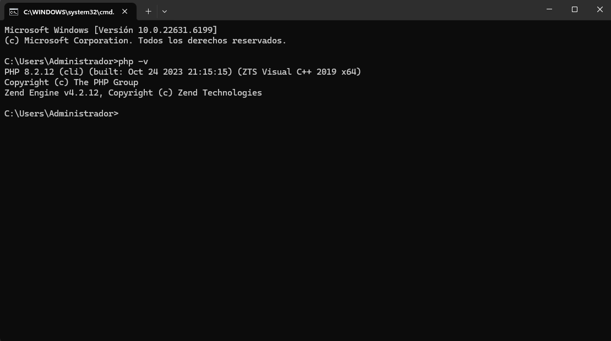
Paso 2. Localización del ejecutable de PHP
Después se utilizó where php para conocer la ubicación desde la cual Windows estaba ejecutando PHP. Esta comprobación es útil para verificar que la instalación se encuentra correctamente registrada en el sistema.
where php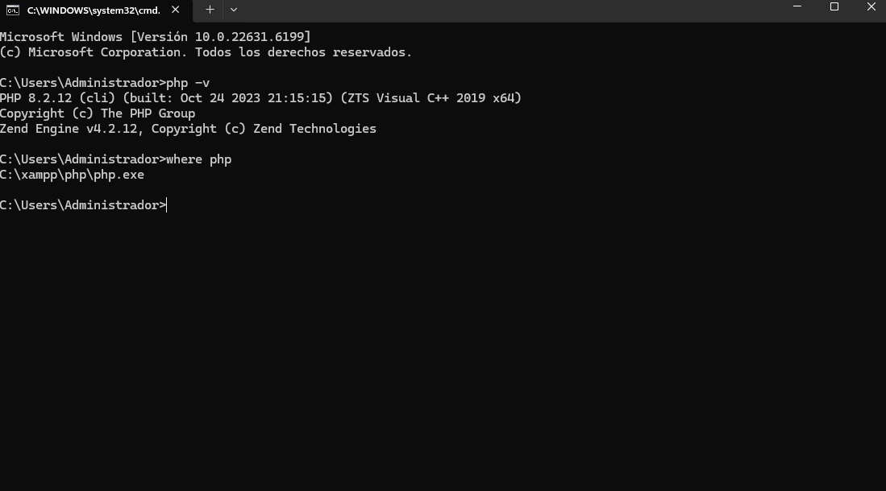
Paso 3. Comprobación de Composer
Posteriormente se verificó Composer, herramienta necesaria para administrar las dependencias del proyecto. El comando composer --version permitió confirmar que Composer estaba instalado y funcionando correctamente.
composer --version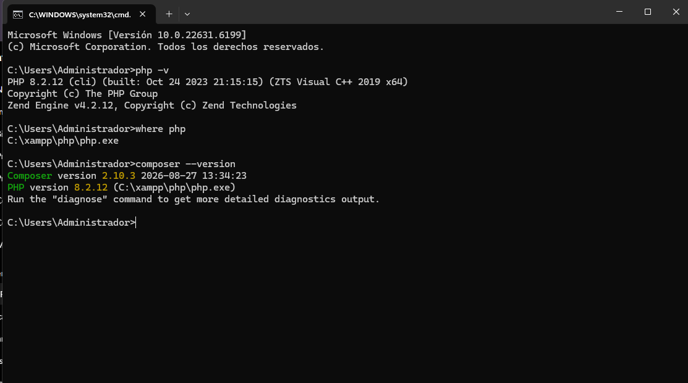
Paso 4. Preparación de la carpeta de trabajo
Se accedió a la carpeta asignada para la actividad mediante el comando cd. El video también muestra la revisión visual de las carpetas del proyecto, lo que permitió comprobar que se estaba trabajando en la ubicación correcta antes de instalar las dependencias.
cd C:\optativa\7e\php\actividad2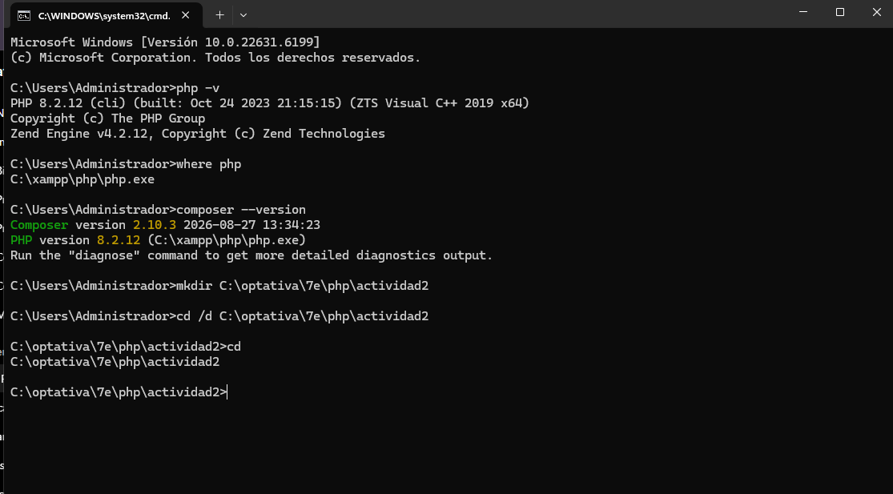
Paso 5. Consulta de Laminas e instalación del componente
En el video se consulta la documentación de Laminas y posteriormente se ejecuta Composer para agregar laminas/laminas-db al proyecto. Composer resolvió las dependencias necesarias y generó los archivos de configuración correspondientes.
composer require laminas/laminas-db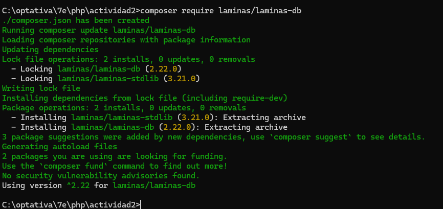
Paso 6. Comprobación de la instalación
Para cerrar el avance mostrado en el video, se revisaron los archivos generados por Composer. La carpeta vendor ya contenía los componentes de Laminas, incluyendo laminas-db y laminas-stdlib. Con esto se comprobó que la instalación había finalizado correctamente.
dir
dir vendor\laminas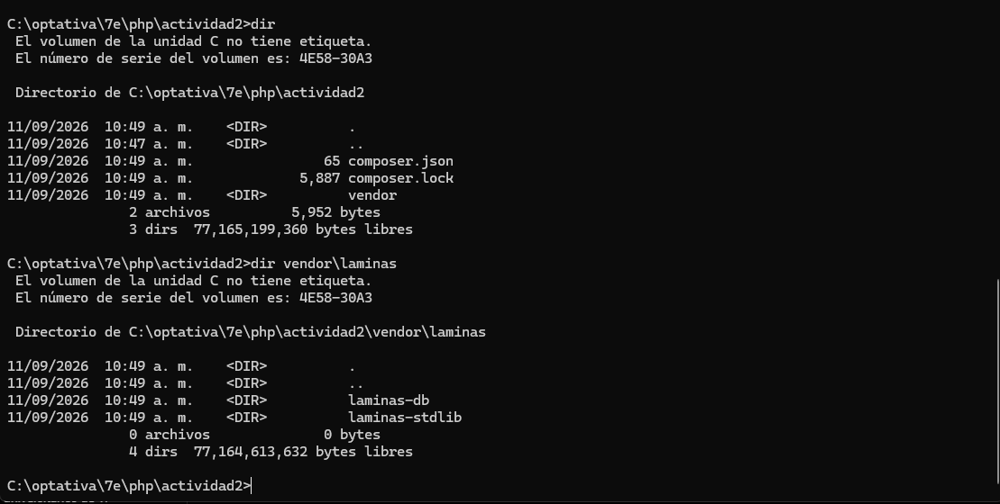
Resumen de comandos utilizados
| Comando | Función |
|---|---|
php -v | Muestra la versión de PHP instalada en el equipo. |
where php | Localiza la ruta del ejecutable de PHP en Windows. |
composer --version | Comprueba que Composer está instalado y disponible. |
cd C:\optativa\7e\php\actividad2 | Permite ingresar a la carpeta utilizada para la actividad. |
composer require laminas/laminas-db | Instala Laminas DB y sus dependencias dentro del proyecto. |
dir | Muestra los archivos generados en la carpeta del proyecto. |
dir vendor\laminas | Comprueba que los paquetes de Laminas fueron instalados dentro de vendor. |
Resultado
El resultado de esta actividad fue dejar funcionando el entorno de PHP con Composer e instalar Laminas DB dentro del proyecto. Al revisar la carpeta vendor se pudo comprobar que las dependencias necesarias quedaron agregadas correctamente.
Conclusión de la actividad 1
Con esta primera actividad entendí mejor cómo preparar un proyecto de PHP antes de empezar a programar. Revisar PHP y Composer me ayudó a confirmar que el entorno estaba listo, y con Composer pude instalar Laminas DB de una forma más sencilla. Al final el proyecto quedó preparado para continuar con la conexión a la base de datos.
4. Actividad 2. Base de datos en Neon y conexión desde PHP con Laminas DB
Objetivo
Crear en Neon las tablas alumnos, materias e inscripciones con datos de muestra, y desarrollar en PHP, mediante Laminas DB, una página que consulte la tabla alumnos y muestre el resultado en una tabla HTML.
Herramientas utilizadas
| Herramienta | Uso en la actividad |
|---|---|
| PHP 8.2.12 (XAMPP) | Ejecución del código y servidor integrado (php -S). |
| Composer y Laminas DB | Dependencias instaladas en la Actividad 1 y usadas en index.php. |
| Neon (PostgreSQL) | Base de datos neondb en la nube y su Editor SQL. |
| CMD de Windows | Verificación de extensiones y arranque del servidor. |
| Bloc de notas | Escritura del archivo index.php. |
| Navegador web | Visualización de la consola de Neon y del resultado de la página. |
Procedimiento
Esta actividad continúa en la misma carpeta de trabajo C:\optativa\7e\php\actividad2, donde ya se habían instalado PHP, Composer y Laminas DB (Actividad 1); por ello esas capturas no se repiten aquí.
Paso 1. Obtención de los datos de conexión en Neon
Desde la consola de Neon se abrió la ventana Connect del proyecto para consultar la cadena de conexión de la base de datos neondb. Esta información (host, usuario, base de datos y parámetros SSL) es la que se necesita más adelante para configurar el adaptador de Laminas DB.
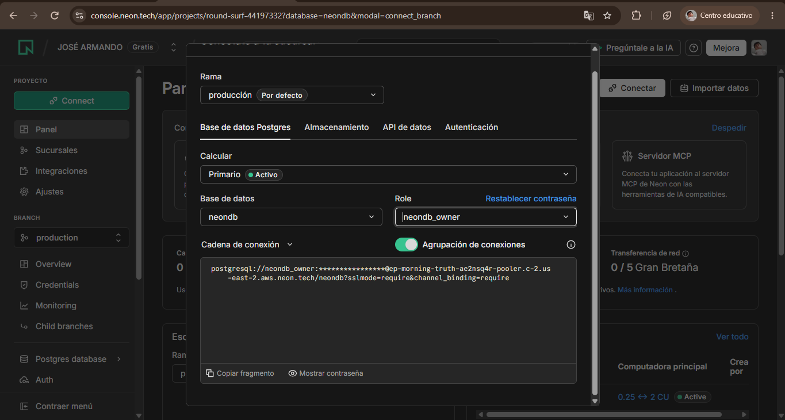
En la Figura 2.1 se observa la cadena de conexión que entrega Neon, con el host tipo pooler y el parámetro sslmode=require.
Paso 2. Creación de las tablas desde el Editor SQL
En el Editor SQL de Neon se ejecutó la consulta guardada como «crear tablas del sistema de matriculación de estudiantes», que define las tablas del sistema. En la captura se distingue la sentencia CREATE TABLE alumnos con un identificador SERIAL PRIMARY KEY, el nombre y un correo único.
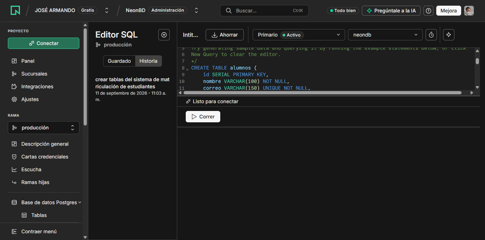
En la Figura 2.2 se aprecia el script de creación de tablas dentro del Editor SQL, listo para ejecutarse sobre la base neondb.
Después se abrió la sección Tablas de la consola para comprobar visualmente el resultado.
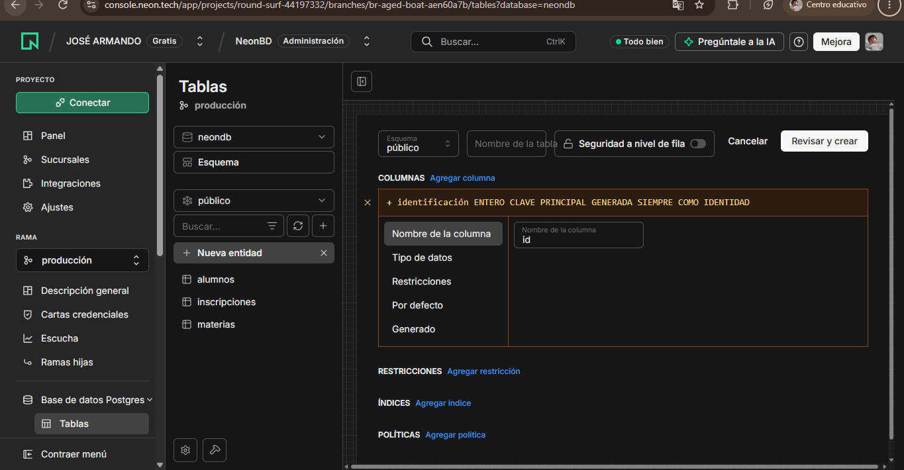
La Figura 2.3 muestra que la base ya contiene las tres tablas requeridas: alumnos, inscripciones y materias.
Paso 3. Inserción de datos de muestra
Se insertaron registros en cada tabla para poder probar consultas. En alumnos se registraron tres estudiantes con nombre, correo y edad; en materias, tres materias con sus créditos; y en inscripciones, cuatro relaciones entre alumno y materia. Neon confirmó cada ejecución con el mensaje «La instrucción se ejecutó correctamente».
INSERT INTO alumnos (nombre, correo, edad)
VALUES
('Juan Pérez', 'juan@gmail.com', 20),
('María López', 'maria@gmail.com', 21),
('Carlos García', 'carlos@gmail.com', 19);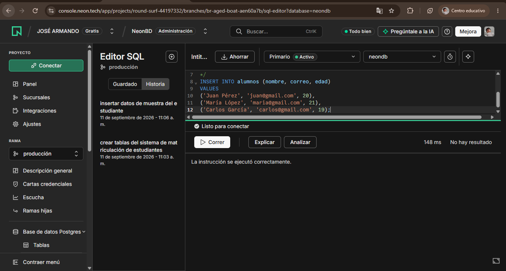
La Figura 2.4 confirma que la inserción en alumnos se ejecutó sin errores.
INSERT INTO materias (nombre, creditos)
VALUES
('Programación', 8),
('Bases de Datos', 8),
('Desarrollo Web', 6);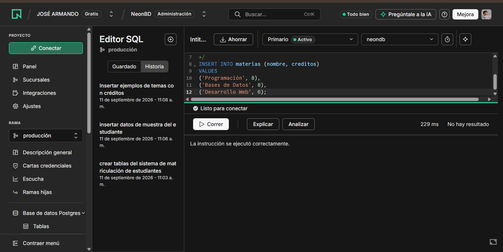
En la Figura 2.5 se observa la inserción en materias, también confirmada por Neon.
INSERT INTO inscripciones (alumno_id, materia_id)
VALUES
(1, 1),
(1, 2),
(2, 2),
(3, 3);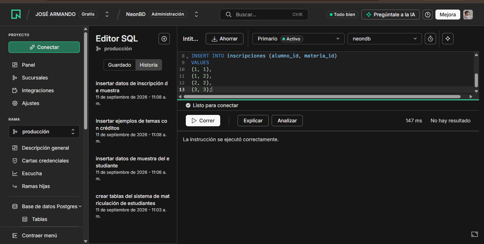
La Figura 2.6 evidencia el registro de las inscripciones que relacionan alumnos con materias.
Paso 4. Consultas de verificación
Para comprobar los datos se ejecutaron tres consultas SELECT *, una por tabla. Con ellas se verificó que las tablas contenían la información recién insertada.
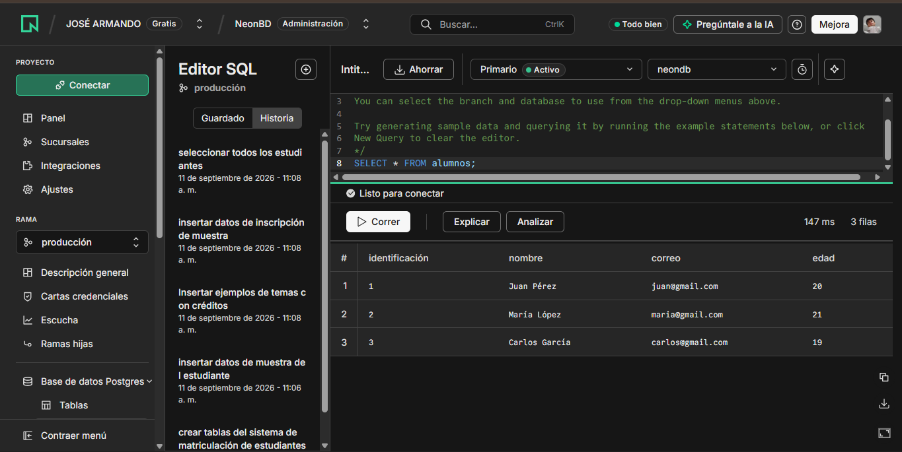
En la Figura 2.7 aparecen los tres alumnos con las columnas identificador, nombre, correo y edad.
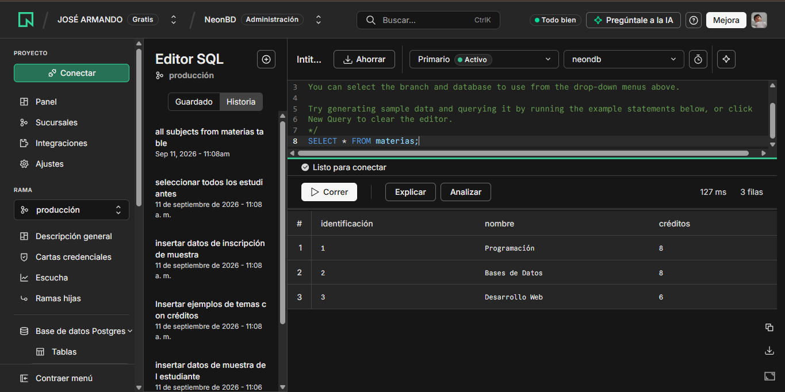
La Figura 2.8 muestra las tres materias con sus créditos.
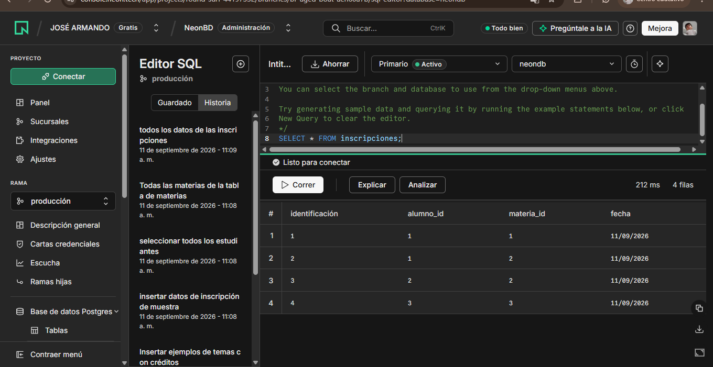
En la Figura 2.9 se listan las cuatro inscripciones con la fecha 11/09/2026 asignada.
Paso 5. Verificación de extensiones y creación de index.php
De vuelta en CMD se comprobó con php -m | findstr /i zip y php -m | findstr /i pgsql que PHP tenía cargadas la extensión zip y el controlador pdo_pgsql, necesario para hablar con PostgreSQL. Enseguida se ejecutó notepad index.php.
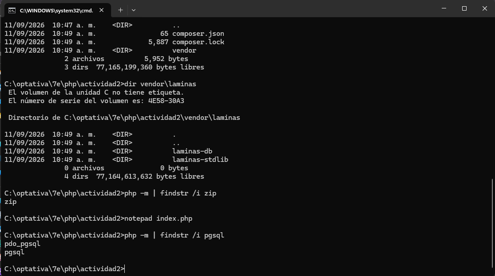
La Figura 2.10 muestra las respuestas zip y pdo_pgsql, con lo que el entorno quedó listo para conectarse a PostgreSQL.
Paso 6. Código de la aplicación
En index.php se cargó el autoload de Composer, se importó la clase Adapter de Laminas DB y se definió un arreglo de configuración con el controlador Pgsql, el host de Neon, el usuario, el puerto 5432, la base neondb y las opciones SSL. Con el adaptador se ejecutó SELECT * FROM alumnos y se construyó una tabla HTML con los resultados.
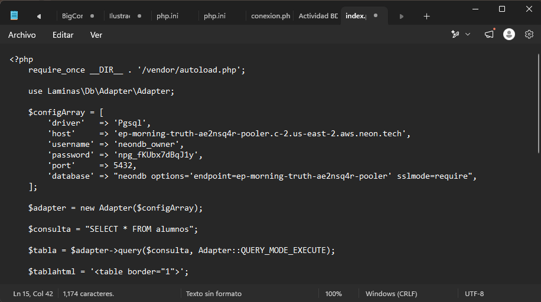
En la Figura 2.11 se observa el código completo de conexión y consulta tal como se escribió en el Bloc de notas.
Paso 7. Ejecución de la aplicación
La aplicación se ejecutó con el servidor integrado de PHP desde la carpeta del proyecto. La consola registra las peticiones GET / respondidas con código 200.
cd /d C:\optativa\7e\php\actividad2
php -S localhost:8000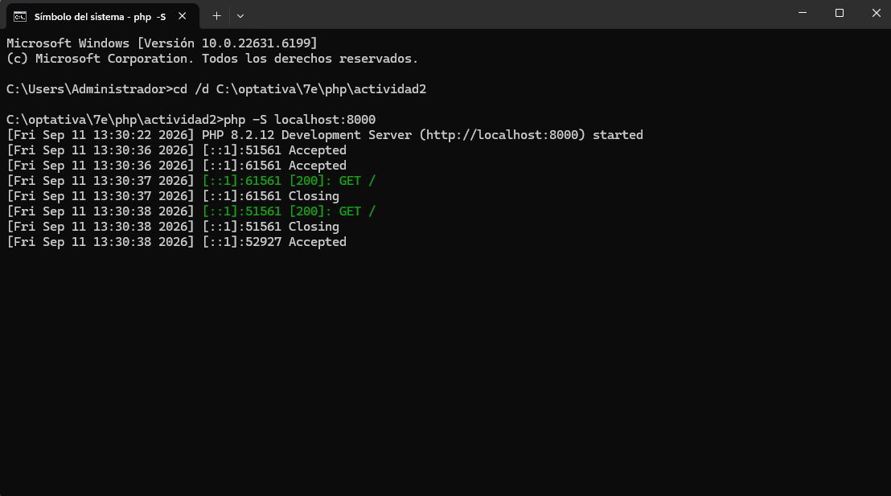
La Figura 2.12 muestra el servidor iniciado y las peticiones atendidas con código 200.
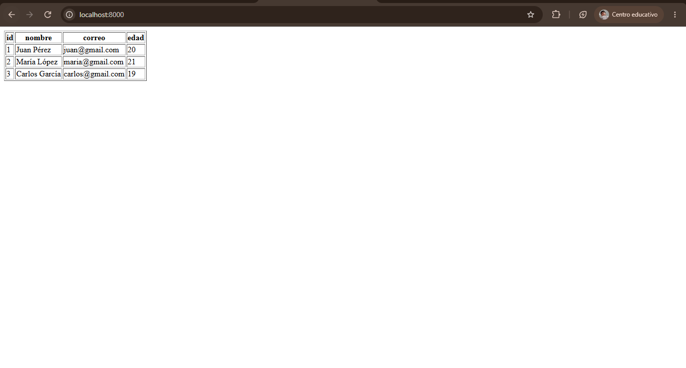
La Figura 2.13 presenta el resultado final: los tres alumnos guardados en Neon se muestran en la página, lo que demuestra la conexión PHP → Laminas DB → Neon.
Resumen de comandos utilizados
| Comando | Herramienta | Función |
|---|---|---|
php -m | findstr /i zip | CMD / PHP | Comprueba que la extensión zip esté cargada. |
php -m | findstr /i pgsql | CMD / PHP | Comprueba que el controlador pdo_pgsql esté disponible. |
notepad index.php | CMD / Bloc de notas | Abre o crea el archivo index.php. |
cd /d C:\optativa\7e\php\actividad2 | CMD | Entra a la carpeta del proyecto. |
php -S localhost:8000 | PHP | Inicia el servidor de desarrollo integrado. |
CREATE TABLE ... | SQL / Neon | Crea las tablas alumnos, materias e inscripciones. |
INSERT INTO ... VALUES ... | SQL / Neon | Inserta los datos de muestra. |
SELECT * FROM alumnos; | SQL | Consulta todos los registros de una tabla (también materias e inscripciones). |
Tabla de verificación
| Elemento verificado | Resultado |
|---|---|
| Tablas creadas en Neon | Verificadas en la sección Tablas (Figura 2.3) |
| Datos de muestra | Confirmados con SELECT (Figuras 2.7 a 2.9) |
| Extensión pdo_pgsql | Presente (Figura 2.10) |
| Página conectada a Neon | Confirmada por la tabla mostrada (Figura 2.11) |
Resultado
Como resultado final, la página PHP mostró en una tabla HTML los alumnos guardados en Neon. Con esto se comprobó que Laminas DB pudo conectarse a PostgreSQL, ejecutar la consulta y recuperar los datos correctamente.
Conclusión de la actividad 2
En esta actividad pude relacionar lo que hice en Neon con una aplicación real en PHP. Primero se crearon las tablas y los datos, y después se consultaron desde Laminas DB para mostrarlos en una página. También aprendí que la conexión depende de tener correctamente el host, usuario, base de datos y SSL, además de contar con la extensión pdo_pgsql habilitada.
5. Actividad 3. Aplicación .NET conectada a Neon con salida JSON
Objetivo
Crear una aplicación web con ASP.NET Core que se conecte a la base de datos PostgreSQL alojada en Neon y exponga la información de la tabla alumnos mediante un endpoint que devuelva los registros en formato JSON.
Herramientas utilizadas
| Herramienta | Uso |
|---|---|
| .NET SDK 10 | Creación, compilación y ejecución del proyecto web. |
| ASP.NET Core | Servidor web y definición del endpoint. |
| Npgsql | Proveedor de conexión entre .NET y PostgreSQL. |
| Dapper | Ejecución sencilla de la consulta SQL y mapeo de resultados. |
| Neon | Base de datos PostgreSQL en la nube. |
| CMD, editor y navegador | Comandos, edición de configuración/código y comprobación del JSON. |
Procedimiento
Paso 1. Verificación e instalación del SDK de .NET
Primero se verificó la versión disponible con dotnet --version. Después se instaló/actualizó el SDK 10 mediante winget y se volvió a consultar la versión para confirmar que el entorno había quedado preparado.
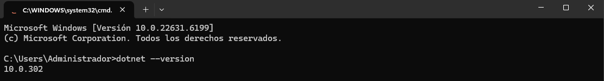
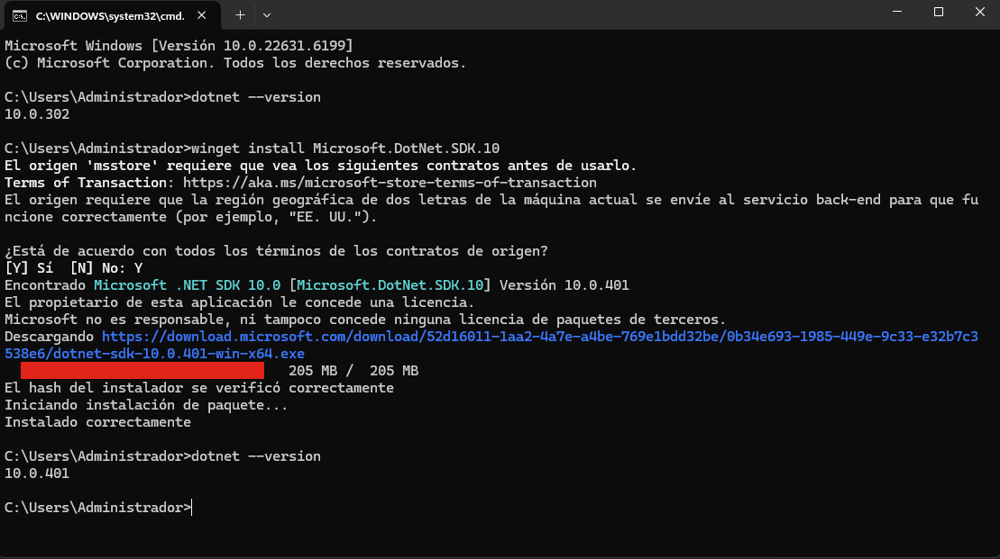
Paso 2. Creación de la carpeta y del proyecto web
Se creó la ruta de trabajo C:\optativa\7e\dotnet y dentro de ella se generó el proyecto webpneon utilizando la plantilla vacía de ASP.NET Core.
mkdir C:\optativa\7e\dotnet
cd /d C:\optativa\7e\dotnet
dotnet new web -o webpneon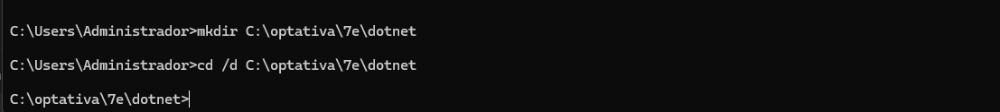
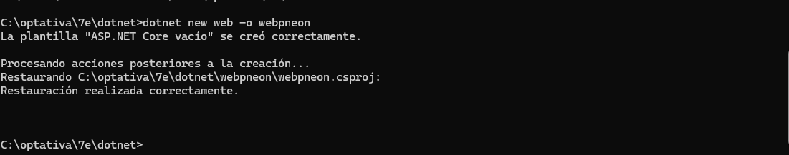
webpneon.Paso 3. Primera ejecución del proyecto
Con dotnet run se comprobó que la aplicación podía iniciar localmente. La consola indicó que el servidor quedó escuchando en http://localhost:5175.
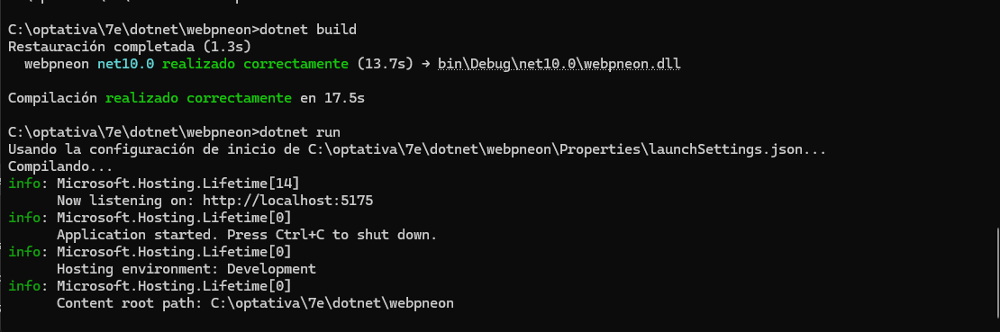
localhost:5175.Paso 4. Obtención de la cadena de conexión de Neon
Desde la opción Connect de Neon se obtuvo la cadena de conexión de la base neondb. Esta información se utilizó posteriormente en la configuración del proyecto para que la aplicación pudiera comunicarse con PostgreSQL.
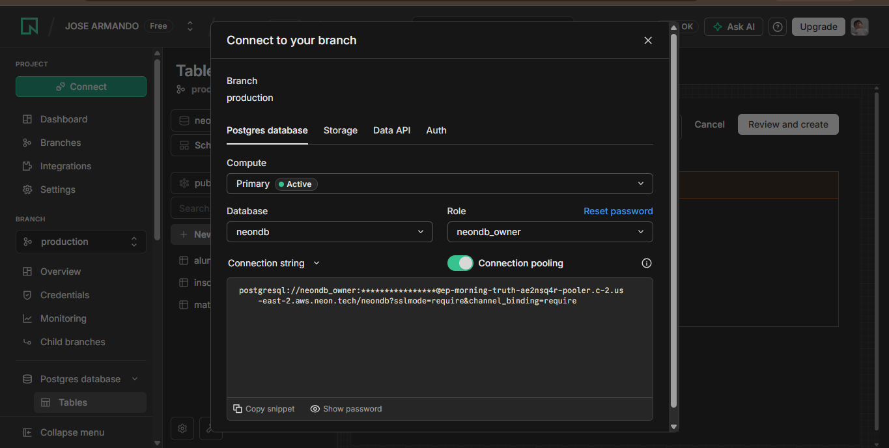
Paso 5. Configuración de appsettings.json
La cadena de conexión se agregó en appsettings.json bajo el nombre NeonDB. De esta forma el código puede leer la configuración mediante GetConnectionString("NeonDB") sin escribir toda la cadena directamente en la lógica del endpoint.
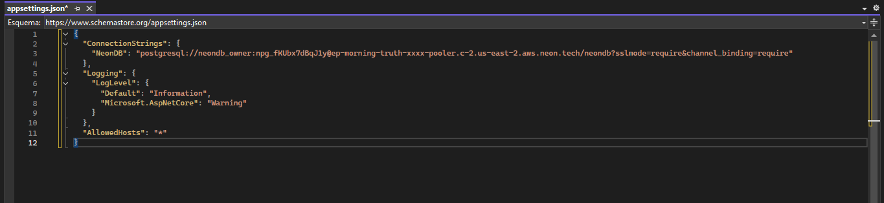
NeonDB en appsettings.json.Paso 6. Instalación de Npgsql y Dapper
Se agregaron los paquetes necesarios para trabajar con PostgreSQL y ejecutar consultas desde .NET. Npgsql proporciona la conexión y Dapper simplifica la lectura de los registros.
dotnet add package Npgsql
dotnet add package Dapper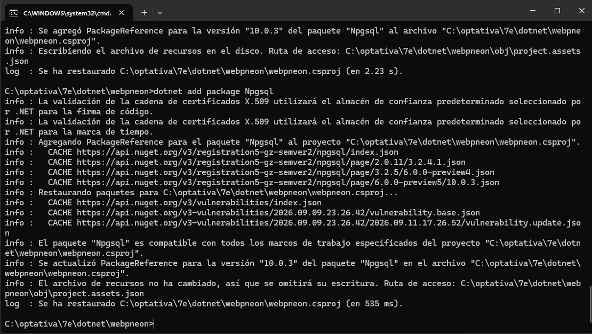
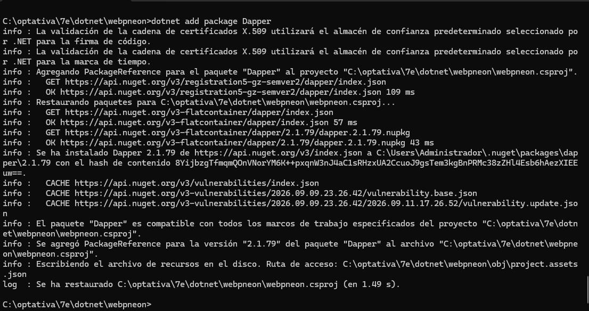
Paso 7. Programación de la conexión y del endpoint
En Program.cs se importaron Dapper y Npgsql, se leyó la cadena NeonDB, se registró NpgsqlConnection y se preparó la aplicación para consultar los datos. El endpoint /alumnos recupera los registros y ASP.NET Core los serializa como JSON.
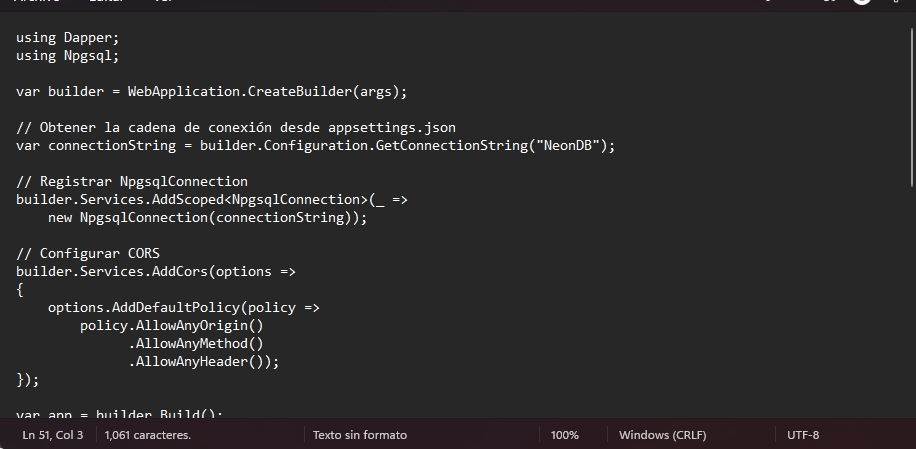
Program.cs con Dapper y Npgsql.Paso 8. Compilación y ejecución final
Se ejecutaron dotnet build y dotnet run. La compilación terminó correctamente y el servidor volvió a quedar disponible en el puerto 5175.
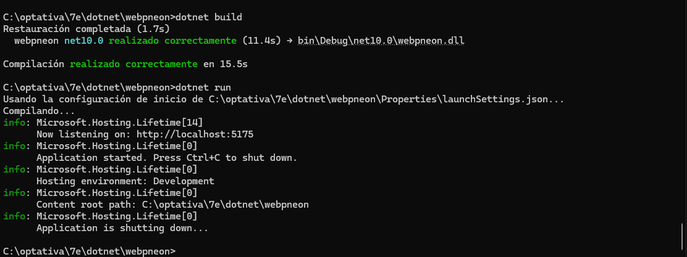
Paso 9. Resultado en formato JSON
Finalmente se abrió http://localhost:5175/alumnos. El navegador mostró un arreglo JSON con tres objetos, cada uno con los campos id, nombre, correo y edad.
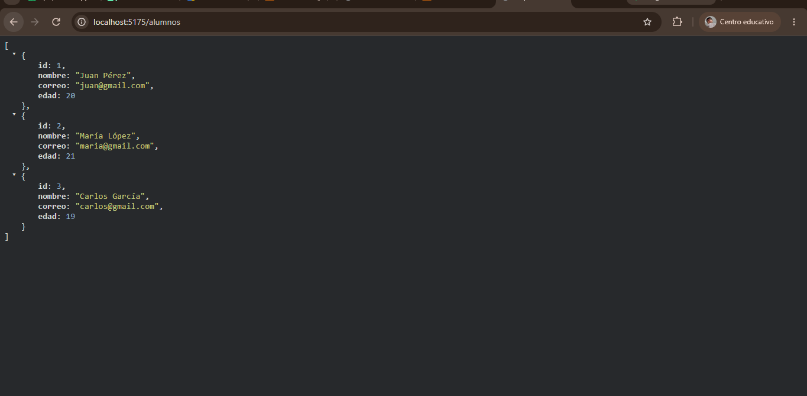
/alumnos en formato JSON.Resumen de comandos utilizados
| Comando | Herramienta | Función |
|---|---|---|
dotnet --version | .NET | Comprueba la versión del SDK instalada. |
winget install Microsoft.DotNet.SDK.10 | winget | Instala o actualiza el SDK de .NET 10. |
dotnet new web -o webpneon | .NET CLI | Crea un proyecto web ASP.NET Core. |
dotnet add package Npgsql | NuGet/.NET CLI | Agrega el proveedor para PostgreSQL. |
dotnet add package Dapper | NuGet/.NET CLI | Agrega Dapper para ejecutar y mapear consultas. |
dotnet build | .NET CLI | Compila y valida el proyecto. |
dotnet run | .NET CLI | Ejecuta el servidor web local. |
Resultado
La aplicación quedó conectada a Neon y el endpoint /alumnos devolvió correctamente los tres registros en JSON. La Figura 3.12 es la evidencia principal del resultado solicitado.
Conclusión de la actividad 3
Con esta práctica comprobé otra forma de obtener los datos almacenados en Neon. En la actividad anterior los datos se mostraron directamente en una tabla HTML, mientras que aquí ASP.NET Core los devolvió en formato JSON. Esto me ayudó a entender mejor cómo una aplicación puede entregar información para que después sea consumida por otra aplicación o servicio.
6. Actividad 4. PostgreSQL, conexión a Neon con psql y modelado de asistencias 7E
Objetivo
Objetivo general
Instalar y configurar PostgreSQL 18, utilizar la herramienta psql desde la línea de comandos para conectarse a una base de datos PostgreSQL alojada en Neon y aplicar los conocimientos adquiridos mediante el diseño de tablas relacionadas para modelar las asistencias del grupo 7E.
Objetivos específicos
- Reconocer la ubicación y función de psql dentro de PostgreSQL.
- Conectarse desde Windows a una base de datos Neon mediante una cadena de conexión.
- Crear y relacionar las tablas materia, profesor, grupo, alumnos y asistencia.
- Aplicar una llave primaria compuesta y cuatro llaves foráneas.
- Registrar y consultar los valores de asistencia del grupo 7E.
Herramientas utilizadas
| Herramienta | Uso en la actividad |
|---|---|
| PostgreSQL 18.6 / psql | Instalación local y terminal interactiva para ejecutar SQL y meta-comandos. |
| CMD de Windows | Ejecución de psql --version y de la conexión a Neon. |
| Neon | Base de datos neondb en la nube y su SQL Editor. |
| Archivo banca.sql | Ejemplo del profesor usado como referencia de llaves foráneas. |
Procedimiento
Instalación de PostgreSQL 18
De acuerdo con las notas de la práctica, PostgreSQL 18 se instaló en Windows utilizando las opciones normales del asistente. Durante el proceso se configuró una contraseña para el usuario administrador, se conservó el puerto predeterminado 5432 y al finalizar se desactivó o no se utilizó Stack Builder porque no era necesario instalar componentes adicionales para este ejercicio.
Localización de PostgreSQL en Windows
Una vez instalado PostgreSQL, se localizó la carpeta donde se encuentra el ejecutable de psql. La ruta utilizada fue:
C:\Program Files\PostgreSQL\18\binLa carpeta bin contiene los ejecutables principales. Desde CMD se puede entrar directamente a esa ubicación con:
cd /d "C:\Program Files\PostgreSQL\18\bin"cd cambia de directorio, mientras que /d permite cambiar también de unidad si fuera necesario. Las comillas evitan problemas con espacios en nombres como Program Files.
¿Qué es psql?
psql es la terminal interactiva de PostgreSQL. Permite conectarse a un servidor, escribir y ejecutar instrucciones SQL, consultar resultados y utilizar comandos especiales de administración y revisión.
Para verificar su instalación se utilizó:
psql --version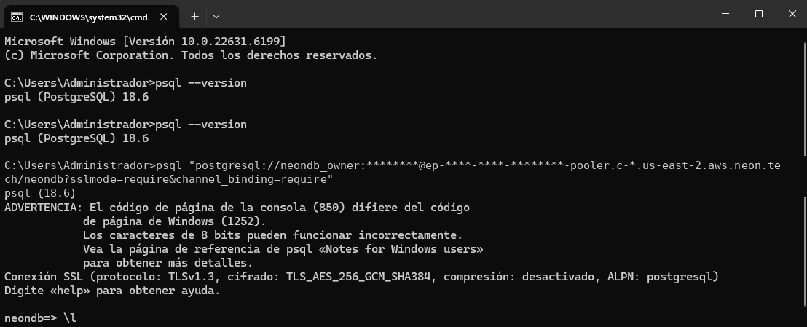
En la evidencia se observa psql (PostgreSQL) 18.6, lo que confirma que el cliente de línea de comandos estaba disponible.
Plataforma Neon
Neon se utilizó como servicio de PostgreSQL en la nube. Desde el proyecto se seleccionó la base de datos, el rol y la opción de conexión por psql. La plataforma genera una cadena de conexión con host, base de datos, usuario y parámetros SSL.
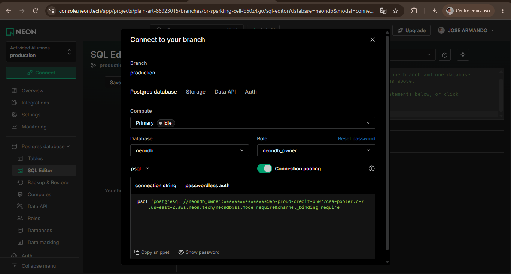
Conexión de psql con Neon
La cadena de conexión copiada desde Neon se colocó temporalmente en un archivo de texto para revisarla. Cuando la cadena aparecía entre apóstrofes, en CMD se sustituyeron por comillas dobles y después se pegó el comando completo.
Una conexión correcta muestra un prompt parecido a:
neondb=>Ese prompt indica que psql se encuentra conectado a la base de datos neondb. A partir de ahí es posible ejecutar SQL y meta-comandos de psql.
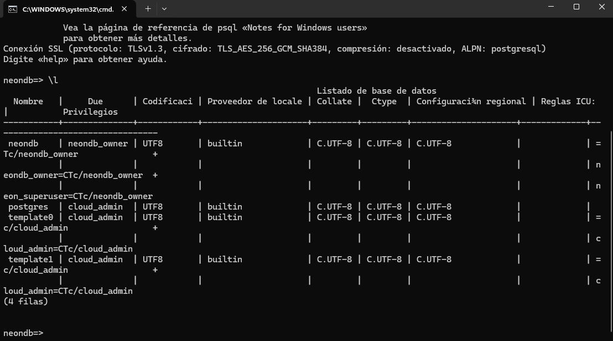
\l para listar bases de datos.Archivo banca.sql
Antes de construir la práctica de asistencias se revisó el ejemplo banca.sql. En las evidencias aparecen las tablas cliente, banco y cuenta. La tabla cuenta fue importante como referencia porque relacionaba información mediante llaves foráneas.
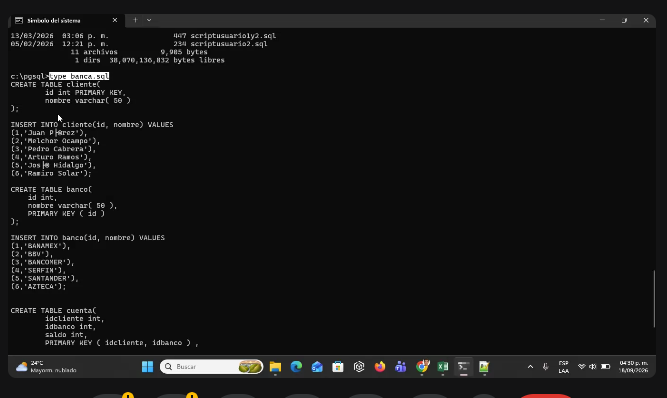
La idea de relacionar una tabla central con otras tablas se reutilizó posteriormente en asistencia, donde se enlazaron materia, grupo, profesor y alumno.
Planteamiento de la práctica
La actividad solicitó definir las tablas necesarias para modelar las asistencias del grupo 7E. Las tablas requeridas fueron materia, profesor, grupo, alumnos y asistencia.
La tabla asistencia debía contener cuatro llaves foráneas: idmateria, idgrupo, idprofesor e idalumno, además del campo fecha. Para identificar un registro sin utilizar un número artificial, se definió una llave primaria compuesta con los cinco campos.
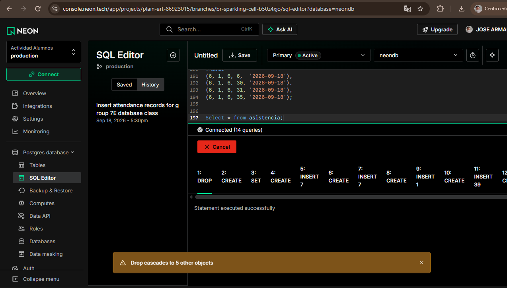
Creación del esquema practica_7e
Para mantener la actividad separada de tablas anteriores se creó un esquema propio:
CREATE SCHEMA practica_7e;
SET search_path TO practica_7e;Un esquema funciona como un espacio de organización dentro de la misma base de datos. De esta forma se pudo trabajar con nombres como alumnos sin afectar tablas antiguas ubicadas en otro esquema.
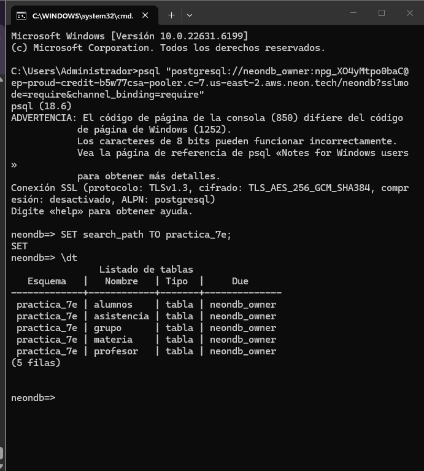
Tabla materia
CREATE TABLE materia(
idmateria INT PRIMARY KEY,
nombre VARCHAR(100) NOT NULL
);Se registraron las materias del horario del grupo 7E. En la práctica, idmateria = 6 corresponde a Optativa I - Base de Datos en la Nube.
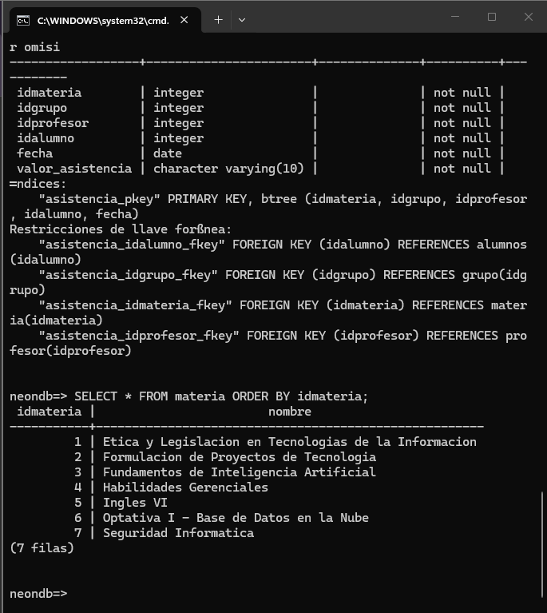
Tabla profesor
La tabla profesor utiliza un identificador y el nombre del docente:
CREATE TABLE profesor(
idprofesor INT PRIMARY KEY,
nombre VARCHAR(100) NOT NULL
);Para Base de Datos en la Nube se confirmó que idprofesor = 6 corresponde a JAVIER NOLASCO HERNANDEZ.
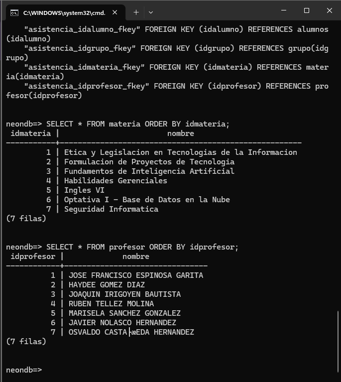
Tabla grupo
CREATE TABLE grupo(
idgrupo INT PRIMARY KEY,
nombre VARCHAR(10) NOT NULL
);
INSERT INTO grupo(idgrupo, nombre)
VALUES (1, '7E');Para los registros de asistencia se utilizó de manera constante idgrupo = 1, que representa al grupo 7E.
Tabla alumnos
CREATE TABLE alumnos(
idalumno INT PRIMARY KEY,
nombre VARCHAR(100) NOT NULL
);Los nombres se tomaron de la lista original de asistencia. Posteriormente se comprobó que la tabla contenía 39 alumnos mediante:
SELECT COUNT(*) AS total_alumnos
FROM alumnos;Ver los 39 alumnos registrados
Tabla asistencia
La tabla asistencia es el centro del modelo. Su estructura final quedó de la siguiente forma:
CREATE TABLE asistencia(
idmateria INT NOT NULL,
idgrupo INT NOT NULL,
idprofesor INT NOT NULL,
idalumno INT NOT NULL,
fecha DATE NOT NULL,
valor_asistencia VARCHAR(10) NOT NULL,
PRIMARY KEY (
idmateria,
idgrupo,
idprofesor,
idalumno,
fecha
),
FOREIGN KEY (idmateria)
REFERENCES materia(idmateria),
FOREIGN KEY (idgrupo)
REFERENCES grupo(idgrupo),
FOREIGN KEY (idprofesor)
REFERENCES profesor(idprofesor),
FOREIGN KEY (idalumno)
REFERENCES alumnos(idalumno)
);La tabla contiene los datos que identifican a qué materia, grupo, profesor, alumno y fecha pertenece cada registro, además del valor de asistencia.
Llave primaria compuesta
No se utilizó un idasistencia SERIAL independiente. La identificación única se construyó con:
PRIMARY KEY (
idmateria,
idgrupo,
idprofesor,
idalumno,
fecha
)Por ejemplo, 6 | 1 | 6 | 30 | 2026-09-14 representa una asistencia concreta de una materia, grupo, profesor, alumno y fecha determinados. Esta combinación evita duplicar el mismo registro.
Cuatro llaves foráneas
| Campo | Referencia | Función |
|---|---|---|
| idmateria | materia(idmateria) | Relaciona la asistencia con una materia existente. |
| idgrupo | grupo(idgrupo) | Relaciona el registro con el grupo. |
| idprofesor | profesor(idprofesor) | Relaciona la asistencia con el profesor. |
| idalumno | alumnos(idalumno) | Relaciona el registro con un alumno válido. |
Estas restricciones mantienen la integridad referencial porque impiden utilizar identificadores que no existan en sus respectivas tablas.
Campo valor_asistencia
Se utilizó VARCHAR(10) porque la lista original contiene valores numéricos y también anotaciones de retardo como r15 y r17.
valor_asistencia VARCHAR(10) NOT NULLLos valores 0, 1 y 2 se conservaron exactamente como aparecen en las listas originales. No se asignó un significado adicional porque ese significado no fue especificado en las evidencias. Los valores r15 y r17 corresponden a retardos registrados.
Verificación con \d asistencia
Después de crear la tabla se ejecutó:
\d asistenciaLa salida permite comprobar columnas, tipos de datos, la llave primaria compuesta y las cuatro llaves foráneas.
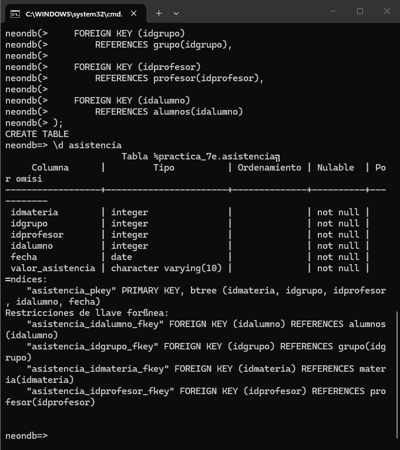
Inserción de registros de asistencia
Los datos se obtuvieron de las listas originales de Base de Datos en la Nube. Las fechas utilizadas fueron 1, 2, 4, 7, 8, 9, 14 y 18 de septiembre de 2026. Para esos registros se mantuvieron constantes:
Los campos que cambiaron fueron idalumno, fecha y valor_asistencia. Un ejemplo representativo es:
INSERT INTO asistencia
(idmateria, idgrupo, idprofesor, idalumno, fecha, valor_asistencia)
VALUES
(6,1,6,30,'2026-09-14','r15');Al finalizar se almacenaron 299 registros. En el día 18 algunas celdas del documento original estaban vacías, por lo que no se inventaron registros para esas celdas.
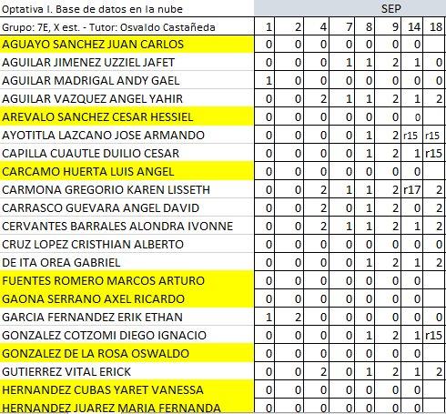
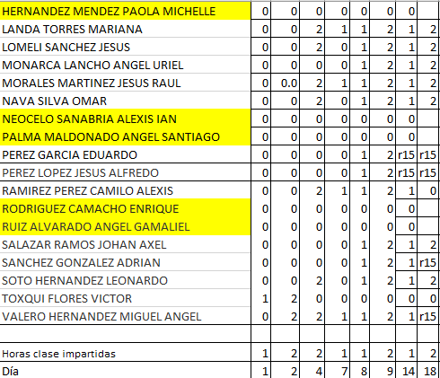
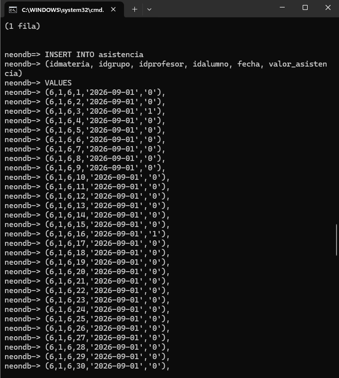
Consulta solicitada: SELECT * FROM asistencia
SELECT * FROM asistencia;SELECT solicita información, el símbolo * indica todas las columnas y FROM asistencia especifica la tabla. El resultado conserva el formato relacional original: una fila por alumno y fecha, con los identificadores de materia, grupo, profesor y alumno.
Esta consulta cumple directamente con la parte de la práctica que pide mostrar todos los registros de asistencia.
Consulta INNER JOIN para mostrar información completa
SELECT
al.nombre AS alumno,
a.fecha,
a.valor_asistencia AS asistencia,
m.nombre AS materia,
g.nombre AS grupo,
p.nombre AS profesor
FROM asistencia a
INNER JOIN alumnos al
ON a.idalumno = al.idalumno
INNER JOIN materia m
ON a.idmateria = m.idmateria
INNER JOIN grupo g
ON a.idgrupo = g.idgrupo
INNER JOIN profesor p
ON a.idprofesor = p.idprofesor
ORDER BY al.nombre, a.fecha;Se utilizaron alias para hacer la consulta más corta: a para asistencia, al para alumnos, m para materia, g para grupo y p para profesor. Cada INNER JOIN reemplaza un identificador por la información legible de la tabla relacionada.
De esta manera, un registro como 6 | 1 | 6 | 30 | 2026-09-14 | r15 puede interpretarse como PEREZ GARCIA EDUARDO — 2026-09-14 — r15 — Optativa I - Base de Datos en la Nube — 7E — Javier Nolasco Hernández.
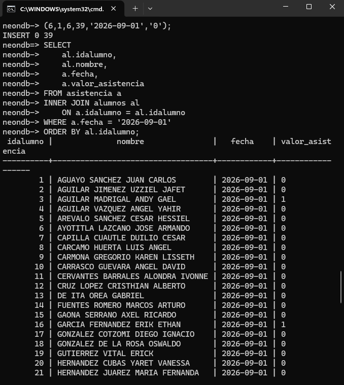
Creación de la vista lista_asistencia_7e
Aunque SELECT * FROM asistencia; es correcto, su salida no se parece visualmente a la lista del profesor. Para presentar los datos con un alumno por fila y una columna por día se creó una vista:
CREATE OR REPLACE VIEW lista_asistencia_7e AS
SELECT
al.idalumno,
al.nombre AS alumno,
COALESCE(MAX(CASE WHEN a.fecha = '2026-09-01'
THEN a.valor_asistencia END), '') AS "1",
COALESCE(MAX(CASE WHEN a.fecha = '2026-09-02'
THEN a.valor_asistencia END), '') AS "2",
COALESCE(MAX(CASE WHEN a.fecha = '2026-09-04'
THEN a.valor_asistencia END), '') AS "4",
COALESCE(MAX(CASE WHEN a.fecha = '2026-09-07'
THEN a.valor_asistencia END), '') AS "7",
COALESCE(MAX(CASE WHEN a.fecha = '2026-09-08'
THEN a.valor_asistencia END), '') AS "8",
COALESCE(MAX(CASE WHEN a.fecha = '2026-09-09'
THEN a.valor_asistencia END), '') AS "9",
COALESCE(MAX(CASE WHEN a.fecha = '2026-09-14'
THEN a.valor_asistencia END), '') AS "14",
COALESCE(MAX(CASE WHEN a.fecha = '2026-09-18'
THEN a.valor_asistencia END), '') AS "18"
FROM alumnos al
LEFT JOIN asistencia a
ON al.idalumno = a.idalumno
AND a.idmateria = 6
AND a.idgrupo = 1
AND a.idprofesor = 6
GROUP BY al.idalumno, al.nombre
ORDER BY al.idalumno;Explicación detallada de la vista
| Elemento | Función en la vista |
|---|---|
FROM alumnos al | Usa alumnos como base para conservar a todos los estudiantes. |
LEFT JOIN asistencia a | Relaciona los alumnos con sus registros, incluso si alguna fecha no tiene registro. |
CASE WHEN | Selecciona el valor correspondiente a una fecha específica. |
MAX() | Permite obtener un solo valor por alumno y fecha después del agrupamiento; no se usa para decidir qué asistencia es “mayor”. |
COALESCE(...,'') | Muestra una celda vacía en lugar de NULL cuando no existe un registro. |
GROUP BY | Agrupa los registros para obtener una fila por alumno. |
ORDER BY | Ordena la lista por identificador de alumno. |
Consulta final de la vista
SELECT * FROM lista_asistencia_7e;El resultado se presenta como idalumno | alumno | 1 | 2 | 4 | 7 | 8 | 9 | 14 | 18. Esta salida es mucho más parecida a la lista original, pero la vista no sustituye a la tabla asistencia: solamente cambia la forma de consultar y mostrar la información.
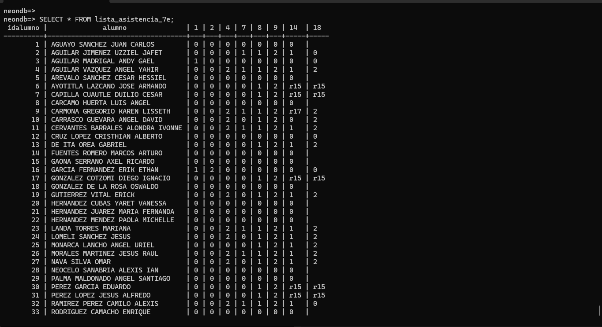
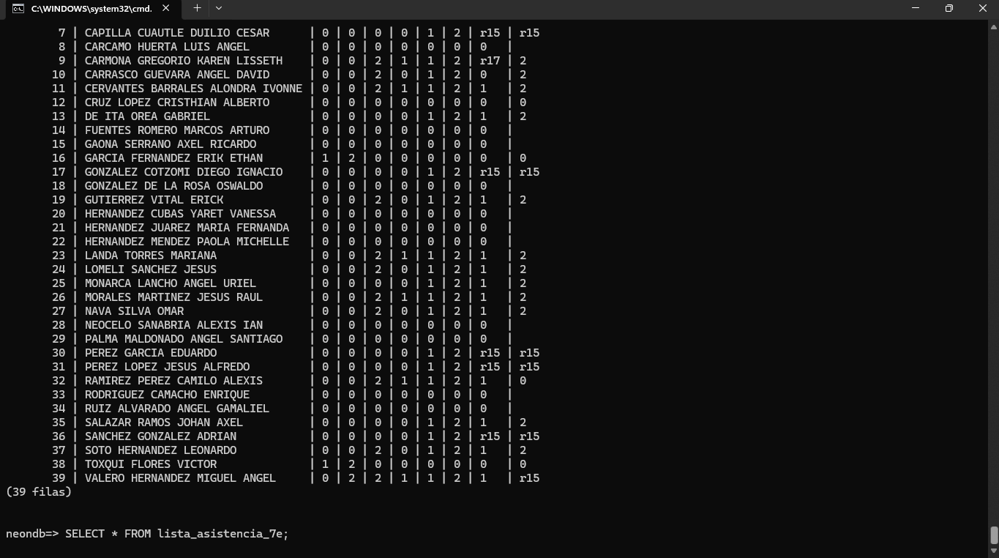
Diferencia entre las tres consultas
| Consulta | Objetivo |
|---|---|
SELECT * FROM asistencia; | Mostrar los registros originales de la tabla, una fila por alumno y fecha. |
Consulta con INNER JOIN | Mostrar nombres de alumno, materia, grupo y profesor en lugar de solo identificadores. |
SELECT * FROM lista_asistencia_7e; | Presentar la información en formato de lista de asistencia, con fechas como columnas. |
Resumen de comandos utilizados
| Comando | Herramienta | Función |
|---|---|---|
cd /d "C:\Program Files\PostgreSQL\18\bin" | CMD | Entra a la carpeta donde está psql. |
psql --version | psql | Muestra la versión instalada del cliente. |
\l | psql | Lista las bases de datos disponibles. |
\dt | psql | Muestra las tablas del esquema actual. |
\d asistencia | psql | Describe columnas, llaves y restricciones de asistencia. |
\dn | psql | Lista los esquemas existentes. |
\q | psql | Sale de psql. |
CREATE SCHEMA practica_7e; | SQL | Crea el esquema de la práctica. |
CREATE TABLE ... | SQL | Crea las tablas materia, profesor, grupo, alumnos y asistencia. |
INSERT INTO asistencia ... VALUES ... | SQL | Registra los valores de asistencia. |
SELECT * FROM asistencia; | SQL | Consulta todos los registros de asistencia. |
... INNER JOIN ... | SQL | Muestra nombres en lugar de identificadores. |
CREATE OR REPLACE VIEW lista_asistencia_7e AS ... | SQL | Crea la vista con formato de lista de asistencia. |
SELECT * FROM lista_asistencia_7e; | SQL | Consulta la vista final. |
Resultado
Al finalizar la práctica se consiguió utilizar PostgreSQL 18 desde CMD, conectarse a Neon mediante psql, crear el esquema practica_7e, construir las cinco tablas solicitadas y registrar a los 39 alumnos. La tabla asistencia quedó relacionada mediante cuatro llaves foráneas y una llave primaria compuesta.
También se registraron 299 valores de asistencia provenientes de las listas proporcionadas, se realizaron consultas relacionales y se creó una vista para mostrar los datos con una forma similar al documento original.
| Requisito | Evidencia | Estado |
|---|---|---|
| Tabla materia con ID y nombre | Consulta de materias y script | Cumplido |
| Tabla profesor con ID y nombre | Consulta de profesores | Cumplido |
| Tabla grupo | Registro 1 = 7E | Cumplido |
| Tabla alumnos | 39 alumnos registrados | Cumplido |
| Tabla asistencia | Estructura mostrada con \d asistencia | Cumplido |
| 4 llaves foráneas | idmateria, idgrupo, idprofesor, idalumno | Cumplido |
| Campo fecha | fecha DATE NOT NULL | Cumplido |
| Llave primaria compuesta | 5 campos en PRIMARY KEY | Cumplido |
| Valores de asistencia | 0, 1, 2, r15, r17 según evidencias | Cumplido |
| SELECT * FROM asistencia | Consulta solicitada por la práctica | Cumplido |
| Relaciones con JOIN | Consulta relacionada | Cumplido |
| Vista final | lista_asistencia_7e | Cumplido |
Conclusión de la actividad 4
En esta práctica aprendí a trabajar con PostgreSQL desde psql y a conectarme con una base de datos de Neon. Desde CMD pude ejecutar los comandos, revisar las tablas y comprobar los resultados sin depender solamente de la interfaz web.
La parte de asistencias me ayudó a entender mejor para qué sirven las llaves primarias compuestas y las llaves foráneas. Al relacionar materia, grupo, profesor, alumno y fecha se puede identificar cada asistencia sin repetir datos de manera innecesaria.
Por último, con INNER JOIN fue posible mostrar nombres y datos más fáciles de leer en lugar de solamente identificadores. La vista lista_asistencia_7e permitió presentar la información en un formato parecido a una lista de asistencia, pero manteniendo la estructura correcta de la base de datos.
7. Actividad 5. Usuarios, privilegios y aplicaciones de respaldo
5.1 Creación de usuarios y asignación de privilegios
Objetivo
Administrar usuarios y privilegios en una base de datos PostgreSQL alojada en Neon, creando los usuarios Pedro, Juan y Pablo y asignando permisos de acuerdo con las funciones indicadas: lectura de tablas para Pedro, escritura en alumnos para Juan y escritura en asistencia para Pablo. Además, comprobar mediante sesiones y operaciones reales que los privilegios otorgados funcionan de acuerdo con las restricciones establecidas.
Herramientas utilizadas
| Herramienta | Uso durante la práctica |
|---|---|
| PostgreSQL / psql | Conexión a la base de datos, creación de usuarios, asignación de privilegios y ejecución de consultas. |
| Neon | Alojamiento en la nube de la base de datos PostgreSQL neondb. |
| Windows Terminal / PowerShell | Entorno desde el cual se realizaron las conexiones y pruebas. |
| Esquema practica_7e | Contiene alumnos, asistencia, grupo, materia, profesor y la vista lista_asistencia. |
Procedimiento
Paso 1. Conexión inicial y revisión de roles
Se accedió a la base de datos neondb alojada en Neon mediante psql. Después se utilizó \du para revisar los roles existentes antes de crear los usuarios de la práctica.
Comando utilizado
\duResultado y comprobación
La captura confirma el acceso al servidor PostgreSQL y muestra el listado inicial de roles.
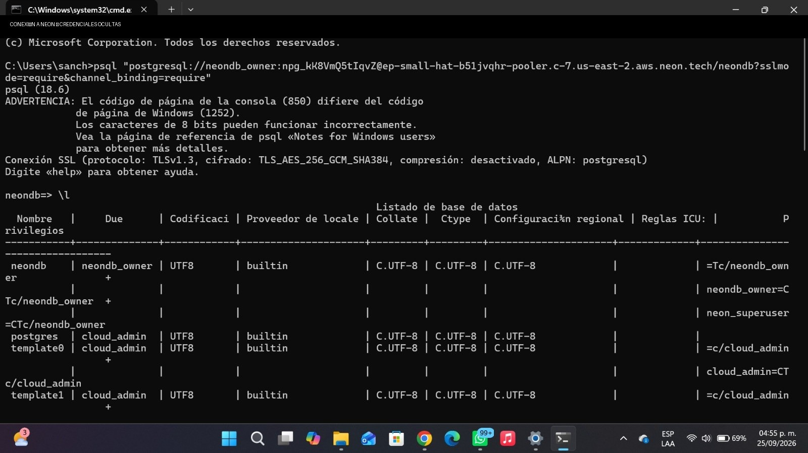
Paso 2. Revisión de la base de datos
Se revisó la conexión y el entorno de trabajo antes de modificar privilegios. Esta comprobación permite verificar que se está trabajando sobre la base de datos correcta.
Comando utilizado
\lResultado y comprobación
Se muestra la base de datos y la sesión activa en PostgreSQL.
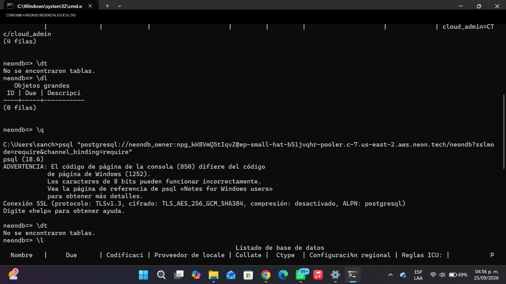
Paso 3. Revisión del esquema practica_7e
Se estableció el esquema de trabajo y se listaron sus tablas. Esto permitió confirmar que las tablas necesarias para las pruebas ya existían.
Comando utilizado
SET search_path TO practica_7e;
\dtResultado y comprobación
Se observan las tablas alumnos, asistencia, grupo, materia y profesor dentro del esquema practica_7e.
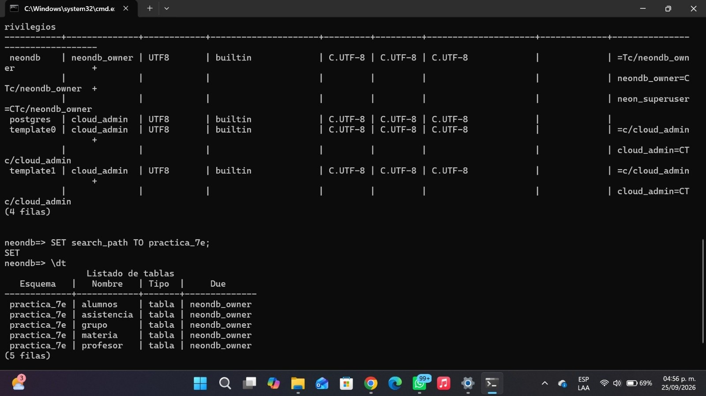
Paso 4. Creación de los usuarios
Con el usuario propietario se crearon los roles de inicio de sesión pedro, juan y pablo. En el reporte las contraseñas fueron ocultadas.
Comando utilizado
CREATE USER pedro WITH PASSWORD '********';
CREATE USER juan WITH PASSWORD '********';
CREATE USER pablo WITH PASSWORD '********';
\duResultado y comprobación
Los mensajes CREATE ROLE y el listado de roles confirman la creación de los tres usuarios.
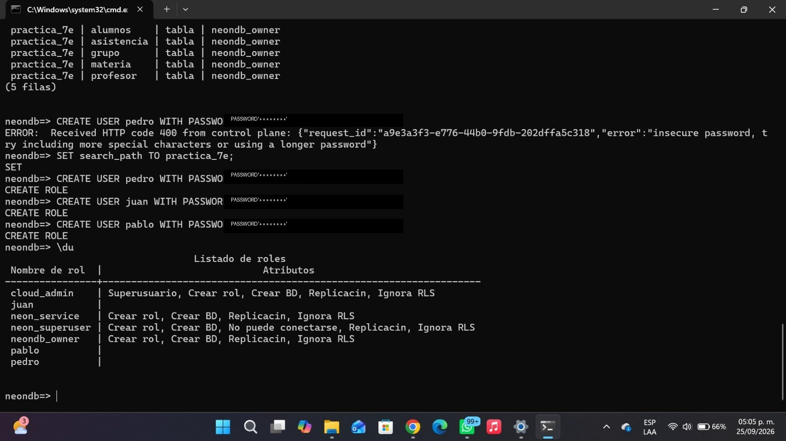
Paso 5. Permiso de conexión y acceso al esquema
Se otorgó a los tres usuarios permiso para conectarse a la base de datos y utilizar el esquema practica_7e.
Comando utilizado
GRANT CONNECT ON DATABASE neondb TO pedro;
GRANT CONNECT ON DATABASE neondb TO juan;
GRANT CONNECT ON DATABASE neondb TO pablo;
GRANT USAGE ON SCHEMA practica_7e TO pedro;
GRANT USAGE ON SCHEMA practica_7e TO juan;
GRANT USAGE ON SCHEMA practica_7e TO pablo;Resultado y comprobación
PostgreSQL respondió GRANT, indicando que los privilegios fueron asignados.
Paso 6. Asignación de privilegios específicos
A Pedro se le concedió lectura sobre todas las tablas; a Juan, lectura e inserción/actualización sobre alumnos; y a Pablo, lectura e inserción/actualización sobre asistencia.
Comando utilizado
GRANT SELECT ON ALL TABLES IN SCHEMA practica_7e TO pedro;
GRANT SELECT, INSERT, UPDATE ON TABLE practica_7e.alumnos TO juan;
GRANT SELECT, INSERT, UPDATE ON TABLE practica_7e.asistencia TO pablo;Resultado y comprobación
Los comandos GRANT fueron aceptados por PostgreSQL.
Paso 7. Comprobación de privilegios
Se utilizó \dp practica_7e.* para revisar la lista de control de acceso. En la salida, Pedro aparece con r (SELECT); Juan con arw en alumnos; y Pablo con arw en asistencia.
Comando utilizado
\dp practica_7e.*Resultado y comprobación
La salida confirma los privilegios asignados a cada usuario.
Paso 8. Inicio de sesión como Pedro
Se cerró la sesión del propietario y se realizó una nueva conexión utilizando el usuario Pedro. Las credenciales sensibles de conexión fueron ocultadas en la evidencia.
Comando utilizado
SELECT current_user;Resultado y comprobación
La sesión se estableció correctamente con el usuario destinado a las pruebas de lectura.
Paso 9. Verificación de identidad de Pedro
Se ejecutó SELECT current_user; para comprobar que las consultas siguientes se realizarían realmente con Pedro y no con el propietario.
Comando utilizado
SELECT current_user;Resultado y comprobación
El resultado muestra el usuario Pedro como usuario actual.
Paso 10. Prueba de lectura de Pedro
Pedro ejecutó una consulta sobre la tabla asistencia. La operación fue permitida porque tiene el privilegio SELECT sobre las tablas del esquema.
Comando utilizado
SELECT * FROM practica_7e.asistencia;Resultado y comprobación
La consulta devuelve registros de asistencia, comprobando el permiso de lectura.
Paso 11. Lectura de la vista lista_asistencia
Pedro consultó la vista lista_asistencia, donde los alumnos aparecen por filas y los días de clase por columnas. Esta prueba demuestra que también puede leer la vista del esquema.
Comando utilizado
SELECT * FROM practica_7e.lista_asistencia
ORDER BY idalumno;Resultado y comprobación
La consulta presenta la lista de asistencia con los valores registrados para cada alumno.
Paso 12. Inicio de sesión y escritura con Juan
Se inició sesión como Juan, se verificó el usuario actual y se realizó una inserción de prueba en practica_7e.alumnos. Después se consultó el registro insertado para comprobar que la escritura se realizó.
Comando utilizado
SELECT current_user;
INSERT INTO practica_7e.alumnos (idalumno, nombre)
VALUES (40, 'ALUMNO PRUEBA JUAN');
SELECT * FROM practica_7e.alumnos WHERE idalumno = 40;Resultado y comprobación
La evidencia muestra la sesión de Juan y la inserción/consulta del alumno de prueba.
Paso 13. Restricción de Juan sobre asistencia
Para comprobar que los privilegios están limitados a la tabla alumnos, Juan intentó ejecutar un UPDATE sobre asistencia. PostgreSQL rechazó la operación por falta de permisos.
Comando utilizado
UPDATE practica_7e.asistencia
SET estado = '1'
WHERE idalumno = 9999;Resultado y comprobación
El mensaje «permission denied for table asistencia» demuestra que Juan no puede modificar esa tabla.
Resumen de comandos utilizados
| Comando | Usuario que lo ejecuta | Función | Resultado esperado |
|---|---|---|---|
CREATE USER ... WITH PASSWORD '********'; | neondb_owner | Crea un usuario/rol con capacidad de inicio de sesión y contraseña. | CREATE ROLE |
GRANT CONNECT ON DATABASE neondb TO usuario; | neondb_owner | Permite que el usuario se conecte a la base de datos neondb. | GRANT |
GRANT USAGE ON SCHEMA practica_7e TO usuario; | neondb_owner | Permite acceder a los objetos contenidos en el esquema. | GRANT |
GRANT SELECT ON ALL TABLES IN SCHEMA practica_7e TO pedro; | neondb_owner | Concede a Pedro lectura sobre las tablas existentes del esquema. | GRANT |
ALTER DEFAULT PRIVILEGES IN SCHEMA practica_7e GRANT SELECT ON TABLES TO pedro; | neondb_owner | Hace que Pedro reciba SELECT sobre nuevas tablas creadas por el propietario en ese esquema. | ALTER DEFAULT PRIVILEGES |
GRANT SELECT, INSERT, UPDATE ON TABLE practica_7e.alumnos TO juan; | neondb_owner | Permite a Juan consultar, insertar y actualizar alumnos. | GRANT |
GRANT SELECT, INSERT, UPDATE ON TABLE practica_7e.asistencia TO pablo; | neondb_owner | Permite a Pablo consultar, insertar y actualizar asistencias. | GRANT |
\du | neondb_owner | Muestra los roles existentes y sus atributos. | Listado de roles |
\dp practica_7e.* | neondb_owner | Muestra los privilegios de acceso de los objetos del esquema. | Tabla de privilegios |
SELECT current_user; | Pedro / Juan | Comprueba qué usuario está ejecutando la sesión actual. | Nombre del usuario activo |
SELECT * FROM practica_7e.asistencia; | Pedro | Comprueba el permiso de lectura de Pedro. | Registros de asistencia |
SELECT * FROM practica_7e.lista_asistencia ORDER BY idalumno; | Pedro | Consulta la vista final de asistencia. | Lista de asistencia |
INSERT INTO practica_7e.alumnos (...) VALUES (...); | Juan | Comprueba que Juan puede escribir en alumnos. | INSERT 0 1 |
UPDATE practica_7e.asistencia SET ... WHERE ...; | Juan | Prueba negativa: verifica que Juan no tiene escritura en asistencia. | ERROR: permission denied |
Resultado
| Usuario | Permiso asignado | Tabla / alcance | Comprobación disponible |
|---|---|---|---|
| Pedro | SELECT | Tablas del esquema practica_7e | Las capturas muestran consultas de lectura exitosas sobre asistencia y lista_asistencia. |
| Juan | SELECT, INSERT, UPDATE | practica_7e.alumnos | Se muestra una inserción de prueba y la consulta del registro; además, un UPDATE sobre asistencia es rechazado. |
| Pablo | SELECT, INSERT, UPDATE | practica_7e.asistencia | La evidencia muestra la asignación del privilegio mediante GRANT y su aparición en la revisión de permisos con \dp. |
Conclusión de la parte 5.1
Esta parte de la práctica me ayudó a entender que no basta con crear usuarios, también es importante definir qué puede hacer cada uno. Con GRANT se asignaron permisos diferentes a Pedro, Juan y Pablo según la tabla que debían utilizar, y después se revisaron los privilegios para comprobar que quedaran configurados.
Los comandos \du, \dp y SELECT current_user; fueron útiles para revisar los roles, los permisos y el usuario conectado. Con esto entendí mejor el principio de mínimo privilegio, ya que cada usuario debe tener solamente los permisos que necesita para realizar su trabajo.
5.2 Aplicaciones de respaldo en cinco lenguajes
Objetivo
Desarrollar cinco aplicaciones web, cada una en un lenguaje distinto (PHP, .NET, Go, Python y Rust), que generen y permitan descargar un respaldo de la base de datos PostgreSQL alojada en Neon usando pg_dump.
Herramientas utilizadas
| Herramienta | Uso |
|---|---|
| pg_dump 18.6 | Respaldo lógico de la base de datos. |
| Neon (PostgreSQL) | Base de datos neondb, esquema practica_7e. |
| Visual Studio Code | Editor para el código. |
| CMD de Windows | Comandos, variables de entorno y ejecución. |
| Navegador web | Pruebas y descarga de los respaldos. |
5.2.0 Preparación común
Las cinco aplicaciones resuelven el mismo problema: generar un respaldo de la base de datos Asistencias 7E alojada en Neon (PostgreSQL) ejecutando pg_dump desde un programa y ofreciendo una página con el botón «Generar respaldo». Cada una usa un lenguaje distinto, pero todas leen la cadena de conexión de la variable de entorno DATABASE_URL y guardan el archivo .sql en una carpeta backups. Todo el trabajo se organizó dentro de C:\optativa\7e\respaldos_neon, con una subcarpeta por lenguaje.
En la Figura 5A.1 se observa la opción Connect de la rama production, de donde se obtiene la cadena de conexión que después se asigna a DATABASE_URL. Esta misma captura sirvió de partida para las cinco aplicaciones.
5.2.1 Aplicación 1: PHP
Objetivo
Generar respaldos de la base de datos de Neon desde una aplicación web en PHP.
Descripción
Aplicación con dos archivos: index.php muestra la página y backup.php ejecuta pg_dump mediante proc_open. Se probó primero un respaldo manual para validar la conexión.
Herramientas utilizadas
| Herramienta | Uso |
|---|---|
| PHP 8.2.12 y servidor integrado | Lógica del respaldo y servidor php -S. |
| pg_dump 18.6 | Generación del archivo .sql. |
| Visual Studio Code | Edición del código. |
| CMD y navegador | Comandos, pruebas y descarga. |
Procedimiento
Se comprobó primero que estuvieran disponibles pg_dump y PHP, ya que la aplicación invoca al primero desde el segundo.
pg_dump --version
php -vLa Figura 5A.2 confirma que el cliente de respaldo de PostgreSQL 18.6 y PHP 8.2.12 responden desde CMD.
where pg_dumpEn la Figura 5A.3 where pg_dump devuelve la ruta C:\Program Files\PostgreSQL\18\bin\pg_dump.exe, lo que indica que está registrado en el PATH.
Paso 2. Carpeta del proyecto
Se creó la carpeta del proyecto con su subcarpeta backups y se verificó con dir.
mkdir C:\optativa\7e\respaldos_neon\php\backups
cd C:\optativa\7e\respaldos_neon\php
dirLa Figura 5A.4 muestra el directorio php ya con la carpeta backups.
Paso 3. Variable DATABASE_URL y respaldo manual
Se definió la variable de entorno DATABASE_URL con la cadena de conexión de Neon y se verificó con set DATABASE_URL. Después se ejecutó un respaldo manual con pg_dump para validar la conexión antes de continuar con la aplicación.
En la Figura 5A.5 se asigna la variable con set "DATABASE_URL=..." y se lanza pg_dump hacia backups\respaldo_asistencias_manual2.sql.
findstr /i "alumnos asistencia grupo materia profesor" backups\respaldo_asistencias_manual2.sqlLa Figura 5A.6 muestra restricciones como asistencia_idalumno_fkey, es decir, el respaldo también incluye las relaciones entre tablas.
Paso 4. Desarrollo de la aplicación en Visual Studio Code
Se abrió la carpeta del proyecto en Visual Studio Code y se crearon los archivos index.php (página con formulario) y backup.php (lógica del respaldo).
La Figura 5A.7 presenta el HTML de la página: datos de la base (Asistencias 7E, PostgreSQL, Neon.tech) y un formulario con el botón «GENERAR RESPALDO».
En la Figura 5A.8 se arma el nombre del archivo con la fecha, el arreglo con pg_dump, -v, -d, la URL y -f, y se ejecuta con proc_open.
Paso 5. Ejecución y pruebas
php -S localhost:8000La Figura 5A.9 confirma que el servidor quedó escuchando en localhost:8000.
En la Figura 5A.10 se ve la página «Respaldo de base de datos» con el botón «Generar respaldo».
La Figura 5A.11 muestra el aviso y el nombre del archivo creado, respaldo_asistencias_2026-09-27_053433.sql.
En la Figura 5A.12 findstr encuentra de nuevo las tablas del esquema practica_7e en el archivo generado por PHP.
La Figura 5A.13 muestra la versión mejorada de la página, que ofrece descargar el archivo recién creado.
Resumen de comandos utilizados
| Comando | Herramienta | Función |
|---|---|---|
pg_dump --version | CMD | Muestra la versión de pg_dump. |
php -v | PHP | Muestra la versión de PHP. |
where pg_dump | CMD | Localiza el ejecutable. |
mkdir ...\php\backups | CMD | Crea la carpeta del proyecto y de respaldos. |
set DATABASE_URL | CMD | Consulta la variable. |
php -S localhost:8000 | PHP | Inicia el servidor. |
set "DATABASE_URL=postgresql://..." | CMD | Define la cadena de conexión que usa la aplicación. |
pg_dump -v -d "<url>" -f <archivo>.sql | PostgreSQL / pg_dump | Genera el respaldo lógico de la base de datos. |
dir backups | CMD | Comprueba el archivo creado. |
findstr /i "alumnos asistencia grupo materia profesor" <archivo>.sql | CMD | Busca las tablas dentro del respaldo. |
Resultado obtenido
Se obtuvo una aplicación PHP que genera respaldos .sql de la base practica_7e y permite descargarlos.
Explicación del resultado
Los archivos aparecen en backups con tamaños de 15,728 y 16,822 bytes, y contienen las tablas y la vista del esquema, por lo que el respaldo es utilizable.
5.2.2 Aplicación 2: .NET (ASP.NET Core)
Objetivo
Implementar la misma función de respaldo con ASP.NET Core.
Descripción
Proyecto web mínimo creado con dotnet new web, con rutas /backup y /download escritas en Program.cs.
Herramientas utilizadas
| Herramienta | Uso |
|---|---|
| .NET SDK 10.0.401 / ASP.NET Core | Servidor web y lógica. |
| pg_dump | Respaldo. |
| Visual Studio Code | Edición. |
| CMD y navegador | Ejecución y pruebas. |
Procedimiento
Paso 1. Verificación de .NET y carpeta del proyecto
dotnet --version
mkdir C:\optativa\7e\respaldos_neon\dotnet
cd C:\optativa\7e\respaldos_neon\dotnet
dirLa Figura 5A.14 confirma que el SDK responde con la versión 10.0.401 y que la carpeta del proyecto se creó vacía.
Paso 2. Creación del proyecto web
Con la plantilla ASP.NET Core vacío se generó el proyecto, y CMD indicó que la restauración de paquetes terminó correctamente.
dotnet new webEn la Figura 5A.15 se ve el mensaje de creación de la plantilla y los archivos generados (Program.cs, appsettings.json, dotnet.csproj).
Paso 3. Edición de Program.cs
Se abrió el proyecto en Visual Studio Code y se editó Program.cs para devolver una página HTML con un formulario que envía una petición POST a la ruta /backup.
En la Figura 5A.16 aparece el formulario con el botón «GENERAR RESPALDO» y los datos de la base.
La Figura 5A.17 muestra el fragmento que agrega -d, la URL de la base, -f y la ruta del archivo al proceso.
Paso 4. Ejecución
set "DATABASE_URL=postgresql://..."
dotnet runEn la Figura 5A.18 la aplicación compila y queda escuchando en http://localhost:5039.
La Figura 5A.19 muestra la interfaz: base Asistencias 7E, motor PostgreSQL, servidor Neon.tech y tecnología .NET / ASP.NET Core.
En la Figura 5A.20 el sistema informa el archivo respaldo_asistencias_2026-09-26_222640.sql.
Paso 5. Comprobación del archivo
En la Figura 5A.21 se localizan las definiciones de alumnos, asistencia, grupo y la vista lista_asistencia_7e.
La Figura 5A.22 muestra la ruta /download/... y el archivo descargado por el navegador.
Resumen de comandos utilizados
| Comando | Herramienta | Función |
|---|---|---|
dotnet --version | .NET | Muestra la versión del SDK. |
dotnet new web | .NET | Crea un proyecto ASP.NET Core vacío. |
dotnet run | .NET | Compila y ejecuta la aplicación. |
set "DATABASE_URL=postgresql://..." | CMD | Define la cadena de conexión que usa la aplicación. |
pg_dump -v -d "<url>" -f <archivo>.sql | PostgreSQL / pg_dump | Genera el respaldo lógico de la base de datos. |
dir backups | CMD | Comprueba el archivo creado. |
findstr /i "alumnos asistencia grupo materia profesor" <archivo>.sql | CMD | Busca las tablas dentro del respaldo. |
Resultado obtenido
La aplicación ASP.NET Core generó y permitió descargar el respaldo respaldo_asistencias_2026-09-26_222640.sql.
Explicación del resultado
La verificación con dir y findstr muestra el archivo de 15,728 bytes con las tablas de practica_7e.
5.2.3 Aplicación 3: Go
Objetivo
Implementar el respaldo con Go, instalando previamente el lenguaje.
Descripción
Programa main.go con el paquete estándar net/http que ejecuta pg_dump con exec.Command.
Herramientas utilizadas
| Herramienta | Uso |
|---|---|
| Go 1.27.1 | Lenguaje y servidor net/http. |
| pg_dump | Respaldo. |
| Visual Studio Code | Edición. |
| CMD y navegador | Ejecución y pruebas. |
Procedimiento
Paso 1. Descarga de Go
Al ejecutar go version CMD indicó que el comando no se reconocía, por lo que Go aún no estaba instalado. Se descargó el instalador desde el sitio oficial.
go versionEn la Figura 5A.23 se observa la descarga del instalador para Windows.
Paso 2. Instalación y verificación
La Figura 5A.24 muestra la pantalla de bienvenida del instalador (amd64, go1.27.1).
En la Figura 5A.25 go version responde go version go1.27.1 windows/amd64.
Paso 3. Proyecto y módulo
mkdir C:\optativa\7e\respaldos_neon\go
cd C:\optativa\7e\respaldos_neon\go
go mod init respaldo-neonEn la Figura 5A.26 Go crea el archivo go.mod para el módulo respaldo-neon.
Paso 4. Programa main.go
En la Figura 5A.27 el programa ejecuta pg_dump con -d, la URL de la base, -f y la ruta del archivo.
Paso 5. Ejecución y pruebas
set "DATABASE_URL=postgresql://..."
go run .La Figura 5A.28 muestra el mensaje «Servidor Go iniciado en http://localhost:8080».
En la Figura 5A.29 se ve la página con la tecnología Go / net/http y el botón para generar el respaldo.
La Figura 5A.30 informa el archivo respaldo_asistencias_2026-09-26_230613.sql.
En la Figura 5A.31 el navegador descarga el archivo desde localhost:8080/backup.
Resumen de comandos utilizados
| Comando | Herramienta | Función |
|---|---|---|
go version | Go | Muestra la versión de Go. |
go mod init respaldo-neon | Go | Crea el módulo del proyecto. |
go run . | Go | Compila y ejecuta el programa. |
set "DATABASE_URL=postgresql://..." | CMD | Define la cadena de conexión que usa la aplicación. |
pg_dump -v -d "<url>" -f <archivo>.sql | PostgreSQL / pg_dump | Genera el respaldo lógico de la base de datos. |
Resultado obtenido
La aplicación en Go quedó escuchando en el puerto 8080 y generó respaldo_asistencias_2026-09-26_230613.sql.
Explicación del resultado
El listado de descargas del navegador muestra el archivo generado, con lo que se confirma que el flujo completo funcionó.
5.2.4 Aplicación 4: Python (Flask)
Objetivo
Implementar el respaldo con Python y Flask dentro de un entorno virtual.
Descripción
Archivo app.py con Flask; usa subprocess.run para llamar a pg_dump y muestra un error si falta DATABASE_URL.
Herramientas utilizadas
| Herramienta | Uso |
|---|---|
| Python 3.11.9 y pip 24.0 | Lenguaje y gestor de paquetes. |
| Flask 3.1.3 | Servidor web. |
| pg_dump | Respaldo. |
| Visual Studio Code, CMD y navegador | Edición y pruebas. |
Procedimiento
Paso 1. Verificación de Python y pip
python --version
pip --versionLa Figura 5A.32 confirma que Python 3.11.9 y pip 24.0 están disponibles.
Paso 2. Carpeta y entorno virtual
mkdir C:\optativa\7e\respaldos_neon\python
cd C:\optativa\7e\respaldos_neon\python
python -m venv venv
venv\Scripts\activateLa Figura 5A.33 muestra el prefijo (venv) en el prompt, señal de que el entorno está activo.
Paso 3. Instalación de Flask
pip install flaskEn la Figura 5A.34 pip descarga Flask 3.1.3 y sus dependencias (Blinker, Click, ItsDangerous, Jinja2, MarkupSafe y Werkzeug).
Paso 4. Programa app.py
En la Figura 5A.35 el programa muestra un error si no encuentra la variable y crea la carpeta de respaldos y el nombre del archivo con la fecha.
La Figura 5A.36 muestra el uso de subprocess.run con captura de salida para ejecutar pg_dump.
Paso 5. Ejecución y pruebas
python app.pyLa Figura 5A.37 indica que Flask atiende en http://127.0.0.1:5000 en modo de desarrollo.
En la Figura 5A.38 se ve la página con la tecnología Python / Flask y el botón «Generar respaldo».
La Figura 5A.39 muestra el archivo respaldo_asistencias_2026-09-27_000812.sql descargado desde 127.0.0.1:5000/backup.
Resumen de comandos utilizados
| Comando | Herramienta | Función |
|---|---|---|
python --version | Python | Muestra la versión de Python. |
pip --version | pip | Muestra la versión de pip. |
python -m venv venv | Python | Crea el entorno virtual. |
venv\Scripts\activate | CMD | Activa el entorno virtual. |
pip install flask | pip | Instala Flask. |
python app.py | Python | Ejecuta la aplicación. |
set "DATABASE_URL=postgresql://..." | CMD | Define la cadena de conexión que usa la aplicación. |
pg_dump -v -d "<url>" -f <archivo>.sql | PostgreSQL / pg_dump | Genera el respaldo lógico de la base de datos. |
Resultado obtenido
La aplicación Flask generó respaldo_asistencias_2026-09-27_000812.sql y lo descargó desde el navegador.
Explicación del resultado
El listado de descargas muestra el archivo nuevo junto con los respaldos anteriores de las otras aplicaciones.
5.2.5 Aplicación 5: Rust (Axum)
Objetivo
Implementar el respaldo con Rust, instalando antes el lenguaje y sus requisitos.
Descripción
Proyecto Cargo con src/main.rs, que usa Axum y Command::new("pg_dump"). Fue la más larga por la instalación de Rust y de las herramientas de C++.
Herramientas utilizadas
| Herramienta | Uso |
|---|---|
| Rust 1.98.1 (rustc y cargo) | Lenguaje y compilación. |
| rustup | Instalador de Rust. |
| Visual Studio Build Tools 2026 | Herramientas de C++ que exige rustup. |
| Axum, tokio y otras crates | Servidor web y dependencias. |
| pg_dump y navegador | Respaldo y pruebas. |
Procedimiento
Paso 1. Descarga de Rust
rustc --version
cargo --versionEn la Figura 5A.40 se descarga el instalador rustup-init.exe desde el sitio oficial.
Paso 2. Requisito: herramientas de C++
La Figura 5A.41 muestra que rustup solicita las herramientas de compilación de Microsoft C++ antes de continuar.
En la Figura 5A.42 se elige Desarrollo para el escritorio con C++ en el instalador.
Paso 3. Instalación de Rust con rustup
En la Figura 5A.43 se muestran las rutas de Cargo y las opciones; se eligió la instalación estándar (opción 1).
En la Figura 5A.44 se obtienen rustc 1.98.1 y cargo 1.98.1.
Paso 4. Proyecto con Cargo
mkdir C:\optativa\7e\respaldos_neon\rust
cd C:\optativa\7e\respaldos_neon\rust
cargo initLa Figura 5A.45 muestra la creación del paquete binario.
La Figura 5A.46 muestra la llamada a pg_dump con -d, la URL y -f.
Paso 5. Compilación y ejecución
set "DATABASE_URL=postgresql://..."
cargo runEn la Figura 5A.47 la compilación finaliza en 2m 05s y aparece «Servidor Rust iniciado en http://localhost:3000».
La Figura 5A.48 muestra la página con la tecnología Rust / Axum.
En la Figura 5A.49 se informa el archivo respaldo_asistencias_2026-09-26_235317.sql.
La Figura 5A.50 muestra el archivo descargado (15,4 KB) desde localhost:3000/backup.
Resumen de comandos utilizados
| Comando | Herramienta | Función |
|---|---|---|
rustc --version | Rust | Muestra la versión del compilador. |
cargo --version | Cargo | Muestra la versión de Cargo. |
cargo init | Cargo | Crea el proyecto binario. |
cargo run | Cargo | Descarga dependencias, compila y ejecuta. |
set "DATABASE_URL=postgresql://..." | CMD | Define la cadena de conexión que usa la aplicación. |
pg_dump -v -d "<url>" -f <archivo>.sql | PostgreSQL / pg_dump | Genera el respaldo lógico de la base de datos. |
Resultado obtenido
La aplicación en Rust quedó escuchando en el puerto 3000 y generó respaldo_asistencias_2026-09-26_235317.sql.
Explicación del resultado
El navegador descargó el archivo de 15,4 KB, con lo que se confirma la generación del respaldo.
Tabla de verificación
| Aplicación | Puerto | Respaldo comprobado |
|---|---|---|
| PHP | 8000 | Sí (Figuras 5A.11 a 5.22) |
| .NET | 5039 | Sí (Figuras 5A.20 a 5.34) |
| Go | 8080 | Sí (Figuras 5A.30 y 5.48) |
| Python / Flask | 5000 | Sí (Figura 5A.39) |
| Rust / Axum | 3000 | Sí (Figuras 5A.49 y 5.79) |
Conclusión de la parte 5.2
Al realizar el mismo respaldo con cinco tecnologías pude comparar de manera práctica cómo cambia el proceso en cada una. En todas se utilizó DATABASE_URL y pg_dump, pero la instalación, la sintaxis y la forma de ejecutar el servidor fueron diferentes. También tuve que resolver requisitos adicionales, como las herramientas de C++ necesarias para Rust, y comprobar que los archivos de respaldo realmente se generaran.
5.3 Cuadro comparativo de facilidad y rendimiento de las aplicaciones
El siguiente cuadro resume lo que observé al trabajar con las cinco aplicaciones. Para la facilidad tomé en cuenta la instalación, las dependencias y la cantidad de pasos necesarios. El rendimiento se maneja de forma cualitativa, ya que durante la práctica no se hicieron mediciones exactas de tiempo, memoria o CPU.
| Aplicación | Facilidad observada | Rendimiento cualitativo | Justificación |
|---|---|---|---|
| PHP | Alta | Adecuado | El entorno PHP ya estaba preparado y la aplicación pudo ejecutar pg_dump desde una estructura pequeña de archivos. |
| .NET | Media | Alto para la tarea | Requirió proyecto, configuración y dependencias, pero una vez compilado el servidor ejecutó correctamente el respaldo. |
| Go | Media-alta | Alto para la tarea | La aplicación se compiló como programa nativo y utilizó una estructura compacta para invocar pg_dump. |
| Python / Flask | Alta | Adecuado | La creación del entorno virtual y la instalación de Flask fueron directas; la lógica del respaldo se implementó con subprocess. |
| Rust / Axum | Baja | Alto una vez compilado | Fue la implementación con más requisitos previos y tiempo de configuración, incluyendo Rust y herramientas de compilación, aunque el ejecutable final realizó correctamente el respaldo. |
Nota: la comparación de rendimiento se basa únicamente en lo observado durante la práctica. Para hacer una comparación exacta sería necesario medir varias ejecuciones bajo las mismas condiciones.
Conclusión de la actividad 5
En esta actividad trabajé tanto la parte de seguridad como la de respaldo de la base de datos. Primero se configuraron los permisos de Pedro, Juan y Pablo y después se desarrollaron las aplicaciones para generar respaldos con diferentes tecnologías. El cuadro comparativo me permitió ver que cada opción tiene una forma distinta de instalación y ejecución, aunque todas buscan obtener el mismo resultado: generar correctamente el respaldo de PostgreSQL.
8. Conclusión general
A lo largo de las cinco actividades fui trabajando diferentes partes de una base de datos en la nube, desde preparar el entorno de desarrollo hasta consultar, administrar y respaldar una base PostgreSQL en Neon. Cada actividad dejó un resultado visible, como la tabla HTML, la salida JSON, las consultas de asistencia, los permisos de usuarios y los archivos de respaldo.
En la parte de programación pude ver que los mismos datos se pueden utilizar de distintas formas. Con PHP y Laminas DB los mostré directamente en una tabla, mientras que con ASP.NET Core se obtuvieron en JSON. Esto me ayudó a diferenciar una página pensada para mostrar información de un endpoint pensado para compartir datos.
El ejercicio de asistencias reforzó el uso de relaciones y llaves entre tablas, y la parte de usuarios me permitió practicar el control de permisos. Al final, las cinco aplicaciones de respaldo mostraron diferentes maneras de ejecutar pg_dump y me permitieron comparar qué tan sencillo fue preparar cada entorno.
En general, estas prácticas me ayudaron a mejorar el manejo de CMD, psql, SQL, Neon y herramientas de desarrollo web. También entendí que no solo importa que un comando funcione, sino comprobar el resultado y dejar evidencia clara de lo que se realizó.
9. Referencias
- Composer. (2026). Composer documentation. https://getcomposer.org/doc/
- Go Project. (2026). Go documentation. https://go.dev/doc/
- Laminas Project. (2026). laminas-db documentation. https://docs.laminas.dev/laminas-db/
- Microsoft. (2026). .NET documentation. https://learn.microsoft.com/dotnet/
- Mozilla. (2026). MDN Web Docs. https://developer.mozilla.org/
- Neon. (2024, 12 de julio). Postgres roles: What to know before you begin. https://neon.com/blog/postgres-roles
- Neon. (2026). Neon documentation. https://neon.com/docs
- Pallets. (2026). Flask documentation. https://flask.palletsprojects.com/
- PHP Group. (2026). PHP manual. https://www.php.net/manual/
- PostgreSQL Global Development Group. (2026a). Constraints: primary keys and foreign keys. https://www.postgresql.org/docs/18/ddl-constraints.html
- PostgreSQL Global Development Group. (2026b). pg_dump. https://www.postgresql.org/docs/18/app-pgdump.html
- PostgreSQL Global Development Group. (2026c). PostgreSQL 16 documentation: 5.7. Privileges. https://www.postgresql.org/docs/16/ddl-priv.html
- PostgreSQL Global Development Group. (2026d). PostgreSQL 16 documentation: GRANT. https://www.postgresql.org/docs/16/sql-grant.html
- PostgreSQL Global Development Group. (2026e). PostgreSQL 18.6 documentation. https://www.postgresql.org/docs/18/
- PostgreSQL Global Development Group. (2026f). psql — PostgreSQL interactive terminal. https://www.postgresql.org/docs/18/app-psql.html
- Rust Project Developers. (2026). The Rust programming language. https://doc.rust-lang.org/book/
- Tokio Project. (2026). axum documentation. https://docs.rs/axum/latest/axum/